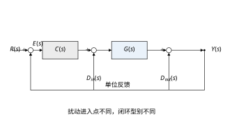
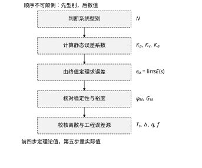
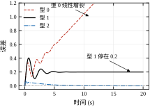
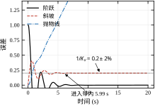
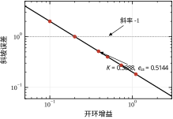
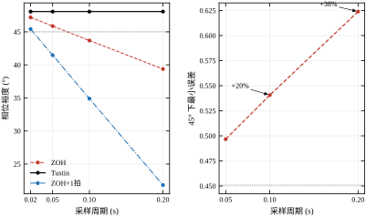
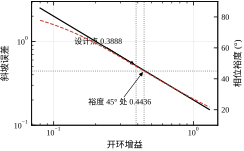
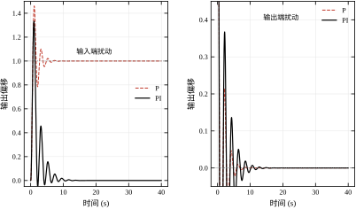
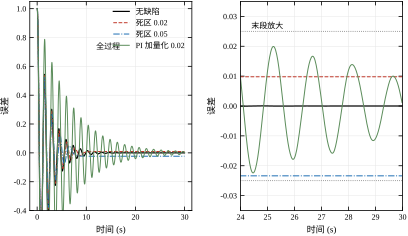
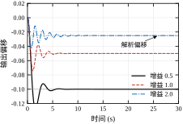

本章的一句话核心思想：稳态误差问的是“时间趋于无穷时，输出还差多少”，答案只由两件事决定——回路里积分器的个数，以及输入信号的阶次；增益只决定差多少，型别决定会不会差成无穷。
第 41 章回答了三个现场问题里的两个：“这个增益还能往上加多少”和“响应够不够快”。剩下一个，往往是最先被提出来的：
“为什么总差那么一点点？”
一台定位平台，指令走 100 mm，编码器读到 99.5 mm，重复定位很好、曲线也很干净，就是差 0.5 mm。操作工的第一反应是“标定没做对”，第二反应是“传感器坏了”。工程师查完标定、换完传感器，差值一点没变——因为它根本不是标定问题，也不是传感器问题，而是回路结构决定的稳态误差。
这个误差有三个特征，认准了就不会走错方向：
三条合起来，指向同一个结论：这是型别与增益共同决定的稳态误差，不是硬件缺陷。补它的办法不是换传感器，而是改回路结构——加一个积分器，或者换一个型别更高的控制律。
顺手做一次量级估算，就能把“型别 + 增益”这两个词落到数上。上面那台平台在 10 mm/s 时差 0.1 mm、在 50 mm/s 时差 0.5 mm，两处一除都是 K_v=v/e_{ss}=10/0.1=50/0.5=100\ \text{s}^{-1}。
两个速度给出同一个 K_v，这正是“线性系统 + 速度型误差”的标志：误差与指令速度严格成正比，与走了多远无关。反过来，如果两个速度算出的 K_v 不一样，那误差就不是单纯的速度误差，里面混了摩擦、死区这类非线性项——这条判别方法 §42.10 还会再用。
K_v=100\ \text{s}^{-1} 这个量级也与 §42.8 表 42-14 里“位置伺服 20\sim100”完全对得上。先估量级，再谈公式，是现场分析误差最省时间的入口。
本章就讲这件事：怎么从传递函数一眼看出“会不会有稳态误差”，怎么算出“差多少”，以及为什么“加积分”能把它抹平、代价又是什么。
第 41 章的三个裕度全在回答“稳不稳、稳到什么程度”。本章的稳态误差回答“准不准”。这两笔账由同一个旋钮（开环增益）决定，但方向相反。
以主例 L(s)=10K/[s(s+2)(0.05s+1)] 为例。K=0.3888 时，相位裕度 48.065^{\circ}、斜坡误差 0.5144；把 K 提到 0.5000，误差降到 0.4000（-22.2\%），相位裕度掉到 42.229^{\circ}（-5.84^{\circ}）。误差降两成，裕度掉近六度。
再往前推一步：K=0.7332 时误差 0.2728，只有原来的 53\%，相位裕度却只剩 33.608^{\circ}，已经跌破工程上常用的 45^{\circ} 底线。而 K 一旦越过 4.4，回路直接失稳——那时候误差不是“大”，而是“没有稳态”这回事了。
把跨度拉到十倍再看，三个后果会同时显形：K 从 0.1000 到 1.1000（11 倍），e_{ss} 从 2.0000 到 0.1818（降到 1/11），\omega_c 从 0.4857 到 3.0100（涨 6.2 倍），\varphi_M 从 74.958^{\circ} 掉到 25.044^{\circ}（少 49.9^{\circ}）。收益、带宽、代价三者朝同一个方向走，只有裕度是反向的。 这就是“一个旋钮”的完整含义：它不是“调误差的旋钮”，而是“调整个回路性格的旋钮”。
顺带说明一个常被混淆的量：带宽涨 6.2 倍并不等于“响应快 6.2 倍”。\omega_c 是开环穿越频率，闭环带宽通常略大于它，但闭环的上升时间还受阻尼影响；K 加大时阻尼下降，超调上升，实际调节时间的改善远小于 6.2 倍。第 41 章 §41.7 的实测已经给出过这个“带宽涨、时间不按比例降”的现象。
所以本章与第 41 章必须成对使用：第 41 章告诉你“K 最多能到多少”，本章告诉你“K 至少要多大”。两条线之间的那段区间，才是可用的设计窗口。主例的这个窗口有多大，§42.6 会用一张图说清楚。
稳态误差的根子在积分器。这句话听起来抽象，用一个生活例子就明白了。
比例控制像“看现在”：误差 10 mm，就出 10 份力；误差 5 mm，就出 5 份力。误差变成 0，出力也变成 0。问题是，很多对象需要“误差为 0 时仍然有出力”才能维持住——比如顶着摩擦力停在半空、顶着负载维持恒速。这时候比例控制只能“留一点误差”来换取那点出力：误差是它出力的唯一来源，出力不为零，误差就不可能为零。
积分控制像“记总账”：只要误差存在过，它就一直在累加，累加的结果就是出力。误差为 0 时，累加值停在原来的数上，出力保持不变。于是“误差为零且出力不为零”成为可能——这正是消除稳态误差的机制。
一句话：比例项需要误差来产生出力，积分项不需要。 这就是为什么“加积分”能消掉常值误差，也是为什么“加积分”必然带来相位滞后（累加需要时间，时间就是滞后）。
把“记总账”写成离散形式，机制一目了然：u_k=u_{k-1}+K_iT_se_k。积分器在代码里就是一个变量，每个采样周期把“误差 \times 采样周期 \times 积分增益”加到自己身上。误差为零时，u_k=u_{k-1}，输出停在原处；误差不为零时，输出就一直在爬。这个变量就是“储能”，它记住了过去所有的误差。
也正因为它是“累积”，它的传递函数是 1/s，相频是恒定的 -90^{\circ}。这个 -90^{\circ} 不随频率变化，所以它不是“某个频段的代价”，而是“全频段的代价”——这一点与微分项正好相反，也是“加积分必掉裕度”的根源。工程上的缓解办法只有一个：给积分器配一个零点（PI 写成 C=K_p(s+K_i/K_p)/s），让零点以上的频段积分项“退居二线”，把 -90^{\circ} 收回来一部分。零点放在哪儿，就是 §42.6.4 要讲的“积分时间怎么选”。
还有一个变体必须认识：泄漏积分器（leaky integrator），C=K_p+K_i/(s+\epsilon)，\epsilon 很小但不为零。它的直流增益是有限的 C(0)=K_p+K_i/\epsilon，所以对型 0 对象来说，型别仍然是 0，只是误差被压得很小。取 §42.4 的型 0 对象（G_0=10）、K_p=1、K_i=1、\epsilon=0.01，环路直流增益是 10\times(1+100)=1010，残余误差 1/1011\approx0.00099，约 0.1\%。
这个数说明泄漏积分器的定位：指标要求“误差小于 0.1\%”，它够用；要求“误差等于零”，它不够。 好处是抗饱和、抗漂移、支持无扰切换——很多 PLC 里的“PI 模块”其实是泄漏积分，\epsilon 来自积分限幅或数值实现的细节。看代码时如果发现积分项乘了一个小于 1 的系数，那就是它。
用主例验证这个直觉。型 1 对象 G=10/[s(s+2)(0.05s+1)] 本身含一个积分器，单位斜坡输入下误差稳定在 1/K_v=0.2（K=1 时）。这里误差不为零，不是因为“缺积分器”，而是因为积分器只有一个，刚好够对付阶跃，不够对付斜坡。想让斜坡误差也归零，就得再加一个积分器，把型别从 1 抬到 2。
这就引出了本章的第一个核心概念：型别。
系统型别（system type）的定义简单到有点粗暴：开环传递函数在 s=0 处的极点个数，记作 N。
L(s)=\frac{K\prod_i(1+T_is)}{s^{N}\prod_j(1+\tau_js)}\tag{42-1}
分母里的 s^N 就是型别。N=0 叫型 0，N=1 叫型 1，N=2 叫型 2。
为什么数原点极点这么重要？因为 s\to 0 对应 t\to\infty。原点上的极点让 L(0)\to\infty，而稳态误差的公式里正好有 1/(1+L)。型别越高，低频增益越“硬”，对慢变化输入的跟随越准。
型别还有一个更老的名字：无差度（astatism）。“型 N”的完整含义是“能无差跟踪最高 N 阶多项式输入”：型 1 能无差跟阶跃，型 2 能无差跟斜坡，型 3 能无差跟抛物线。这个说法把“误差”与“输入阶次”直接绑在一起，比“数极点”更接近工程语言，也与表 42-2 的对角线一一对应。
还要把一个常见误解挡在门外：型别与系统阶数是两个不相干的量。 一个八阶对象完全可能是型 1（七个非零极点加一个原点极点），一个二阶对象也可以是型 2（两个极点都在原点）。型别只数原点极点，不问其他极点在哪、也不问分子有几个零点。判断“这个系统几型”时，唯一要看的是 s=0 这个点。
但型别不是越高越好，代价在第 41 章已经埋下：每个原点极点贡献 -90^{\circ} 相位，且这个滞后在全频段都存在。型 2 的系统在穿越频率处天然背着 180^{\circ}，几乎没有相位余量可用，必须靠零点把它“抬”回来——这就是为什么型 2 系统总是配零点（§42.4 的型 2 算例就是这样，分子是 (1+2s)^2）。
数型别有两个必须注意的地方：
初学者常把稳态误差理解成“仿真跑到最后一刻那个误差值”。这个理解在数值上差不多，在概念上差得远。
严格的定义是极限：
e_{ss}=\lim_{t\to\infty}e(t)\tag{42-2}
它要求这个极限存在。对型 0 系统加斜坡输入，误差随时间线性增长，极限是无穷——这时候“稳态误差”这个词其实不适用，正确的说法是“误差发散”。
实测数据可以看清“极限”与“最后一刻”的差别。型 1 主例（K=1，K_v=5）单位斜坡下，t=10 s 时误差 0.1998，t=20 s 时 0.2000，t=40 s 时还是 0.2000。10 s 的时候已经到位了，再等三十秒也不会更准。 仿真里取末段 200 个点的均值作为“稳态值”，得到的正是 0.2000，与解析值 1/K_v=0.2 逐位吻合。
反过来，什么时候算“进了稳态”？工程上用 \pm2\% 带：误差第一次进入 \pm2\% 并且此后再不出去的时刻。这个算例是 5.99 s。注意这个数不是调节时间——调节时间是输出进入 \pm2\% 带的时间（第 40 章的口径），而这里是误差进入 \pm2\% 带的时间，两者在本例恰好接近，但在型 0 系统里会差得很远（误差永远进不了带）。
仿真怎么才算“到了极限”？本章统一的做法是取末段 200 个采样点的均值。这个做法有三个隐含前提，缺一个数就不可信：
三条合起来，说明“稳态误差”这个词在仿真里始终是个近似，而终值定理给的是精确值。本章所有表格都以解析值为准、以仿真值为证，两者的差值就是这张“近似”的误差。
顺带说清 0.1998 与 0.2000 这 0.0002 的差是哪来的：它不是数值误差，而是“取末值”与“取极限”的差。T_s=0.02 时 10 s 对应 500 个采样点，误差还留着约 0.1\% 的衰减尾巴。本章表格统一写四位小数、统一取末段均值，就是为了让“末值”尽量贴近“极限”，并且把贴到多近说清楚。若只取最后一个采样点，那个数还会被噪声与残余振荡带偏——单点不可信，均值才稳。
最后一个概念要提前分清：稳态误差不是“控制精度”的全部。它只描述“指令不变或匀速变化时差多少”，不描述“跟得上跟不上”（那是带宽与相位裕度的事）、也不描述“停下来抖不抖”（那是噪声与非线性的事）。把这三件事混成一句“精度不够”，是现场排查最常见的起点错误。
§42.2 把误差的三条传递函数、终值定理的适用条件、静态误差系数的定义一次讲清；§42.3 给出五步分析流程；§42.4 用三个不同型别的对象把连续情形走一遍，并用时域仿真逐项验证；§42.5 处理离散情形，说明为什么“采样不改变 K_v，只改变裕度”；§42.6 把误差与裕度放在同一张图上，给出兑换率；§42.7 逐个参数讲作用方向，重点是“扰动进入点”；§42.8 给整定方法与经验数字；§42.9 讨论前馈、复合控制等改进手段；§42.10 落到摩擦、死区、量化三个真实误差源；§42.11 给适用边界；§42.12 是代码与复现步骤。
误差的定义是“指令减输出”：
e(t)=r(t)-y(t),\qquad E(s)=R(s)-Y(s)\tag{42-3}
把反馈回路画出来（图 42-2），会看到扰动可以从未经任何环节的地方进来：指令端、对象输入端、对象输出端。三处的传递函数完全不同，这是稳态误差分析里最容易混淆的一点。

图 42-2 上，R(s) 从最左端进入，D_{in}(s) 加在对象 G(s) 之前，D_{out}(s) 加在对象之后。三条通道分别是：
\frac{E}{R}=\frac{1}{1+C(s)G(s)}=\frac{1}{1+L(s)}\tag{42-4}
\frac{Y}{D_{in}}=\frac{G(s)}{1+C(s)G(s)}\tag{42-5}
\frac{Y}{D_{out}}=\frac{1}{1+C(s)G(s)}\tag{42-6}
这三条不必死记，推一遍就再也不会记错。在求和点处列方程：控制量是 C(R-Y)，对象输入是 C(R-Y)+D_{in}，输出是
Y=G\bigl[C(R-Y)+D_{in}\bigr]+D_{out}
把右边的 Y 移到一起：
Y(1+CG)=CGR+G\,D_{in}+D_{out}
两边同除 1+CG，三项分别对应指令、输入端扰动、输出端扰动，系数就是式 42-4 到 42-6 的三个传递函数。误差是 E=R-Y，把上式代进去，得到三路输入对误差的完整表达式：
E=\frac{1}{1+CG}R-\frac{G}{1+CG}D_{in}-\frac{1}{1+CG}D_{out}
这张式子把“三笔误差”放在了一行里：指令跟不准的部分、输入端扰动透过来的部分、输出端扰动透过来的部分。三者可以叠加（线性系统的本分），也可以分别设计。工程上排查“差一点”时，第一步就是把实测误差往这三项上对号。
三者的分母都是 1+L，分子不同。分母决定“收敛快慢与稳定性”，分子决定“进入点带来的型别”。
这个区别在第 41 章没有显出来，因为那里只关心开环 L 的形状。本章必须分清，因为现场“差一点”的来源经常是扰动而不是指令：导轨有摩擦力、风机有常值风载、电源有固定压降，这些都是 D_{in} 型的扰动。
一个具体的对照（主例 G=10/[s(s+2)(0.05s+1)]）：
这三行可以提炼成一条能直接算的公式。设控制器为纯比例 C=K_p、对象为型 1 及以上（G 在原点有极点），把 s=0 代入式 42-5 之前先约掉公共的 1/s，得到输入端常值扰动 d 引起的稳态偏移：
\Delta y_{ss}=\frac{d}{C(0)}=\frac{d}{K_p}
主例 d=1、K_p=1 代入得 1.0000，与实测 y(40)=1.0000 一致。§42.10 的库仑摩擦算例（d=-0.05）取 K_p=0.5/1.0/2.0，实测偏移 -0.10000/-0.05000/-0.02500，与 d/K_p 逐位吻合——这条公式是后面讲摩擦误差的骨架。
若对象是型 0，公式换成 \Delta y_{ss}=d\,G(0)/[1+K_pG(0)]，因为此时分子 G(0) 不为零、分母 1+K_pG(0) 有限。两个公式的差别正是“积分器在不在扰动作用点的下游”。
若控制器含积分，C(0)=\infty，偏移为零。这就是“要不要加积分”的全部答案：看 C(0) 需要多大。
三行数据放在一起，得出一条本章反复要用的判据：
判稳态误差，先看“扰动从哪儿进”，再看“积分器在不在这个进入点的下游”。
稳态误差的标准算法是终值定理：
e_{ss}=\lim_{t\to\infty}e(t)=\lim_{s\to0}sE(s)\tag{42-7}
它把“时间趋于无穷”换成了“s 趋于零”，把一个时域极限换成了一个代数极限。方便，但有三个前提：
推导其实只有两行。把 E(s) 展成部分分式，每一项 A/(s-p) 的时域原函数是 A\mathrm{e}^{pt}；只要 \mathrm{Re}\,p<0，这些项在 t\to\infty 时全部衰减为零，剩下的只有 s=0 那一项。所以“终值”在数学上就是“E(s) 在原点处的留数”，前提是其余极点都衰减干净——这正是第一条。
用型 0 加斜坡验一下第三条。R=1/s^2，L(0)=K_p，于是 sE(s)\approx1/[s(1+K_p)]，在原点是一阶极点、留数不为零。终值定理给出的“\infty”不是数值溢出，而是“极限不存在”的代数症状；此时正确的说法是“误差线性发散”，斜率正是 1/(1+K_p)——§42.4.2 的图 42-1 上那条虚线，斜率 0.0909 就是它。
实跑能把这条代数症状对上数：型 0 对象（K_p=10）加单位斜坡，t=20 s 时误差读到 1.9504，除以 20 得 0.0975，比 1/(1+K_p)=0.0909 略大。多出来的那部分是一个常数项：0.0909\times20=1.818，与 1.9504 差 0.132，这是尚未衰减干净的瞬态贡献。所以型 0 的斜坡误差曲线是“一条斜线加一个常数偏移”，斜线由 K_p 定，偏移由闭环极点定。这也解释了为什么不能只看一个时刻就反算 K_p——必须用两个时刻的差，或者等偏移衰减完。
三条前提的检查顺序也值得固定下来：先看闭环极点（最硬，一票否决），再看输入形状（决定用哪张表），最后看有没有非线性（决定数值可信度）。 顺序反过来，很容易在“输入形状”上纠缠半天，却发现系统本来就不稳定。
第一条最容易被忽略。一个型 2 系统，如果闭环不稳定，用终值定理算出来的“e_{ss}=1/K_a=0.2”是彻底错的——真实的误差是发散振荡。本章所有算例在给出 e_{ss} 之前，都先核对了闭环稳定性（§42.4 表 42-4 的最后一列），这不是形式主义。
第二条也有现实含义。现场指令很少是纯阶跃，更多是“梯形速度规划”或“正弦扫频”。梯形规划可以分解成若干斜坡段的叠加，用本章方法处理；正弦指令则要转到频率域，用第 41 章的幅频特性算幅值衰减与相位滞后——这是两条不同的技术路线，不能混用。
把 L(s) 按型别展开，可以定义三个静态误差系数：
K_p=\lim_{s\to0}L(s),\qquad K_v=\lim_{s\to0}sL(s),\qquad K_a=\lim_{s\to0}s^2L(s)\tag{42-8}
名字容易误导：K_p、K_v、K_a 里的下标 p,v,a 指的是位置（position）、速度（velocity）、加速度（acceleration）三种输入，不是比例、微分、积分三个增益。它们本身也不是控制器参数，而是开环传递函数在低频端的三个极限值。
对本章的标准形式 L(s)=K\prod(1+T_is)/[s^N\prod(1+\tau_js)]，三个极限只有一个非零有限，见表 42-1。
表 42-1 型别与三个静态误差系数的对应
| 型别 N | K_p | K_v | K_a |
|---|---|---|---|
| 0 | K | 0 | 0 |
| 1 | \infty | K | 0 |
| 2 | \infty | \infty | K |
其中 K 是“尾一化”形式下的增益，也就是 L(s) 在低频的渐近线 K/s^N 的系数。注意是尾一化，不是首一化：10/[s(s+2)(0.05s+1)] 的尾一化要先把分母写成 s\cdot2\cdot(1+0.5s)\cdot(1+0.05s)，于是 K=10/2=5。这个 5 就是 K_v。写成首一化会得 10，差一倍——这是手算最常犯的错。
把这件事写成通式：若 L 已写成式 42-1 的尾一化形式，则型 0 时 K_p=K、型 1 时 K_v=K、型 2 时 K_a=K。三个系数在数值上都等于同一个尾一化增益 K，只是“配给哪一阶输入”不同。 这就是表 42-1 为什么只用一个字母 K。
量纲也值得对一遍，它能把“公式套错”的错误立刻暴露出来。K_p 无量纲（输出单位/输入单位），K_v 的单位是 1/\text{s}，K_a 的单位是 1/\text{s}^2。代进式 42-9：阶跃是“单位/无量纲”，斜坡是“(\text{单位/s})/(1/\text{s})”，抛物线是“(\text{单位/s}^2)/(1/\text{s}^2)”，三种都回到“单位”。量纲不对，一定是型别与输入配错了。
手算时按四步走，不易乱。拿型 2 算例走一遍：
第 3 步的结果与实跑 0.2000 对上（表 42-5）。这四步里最容易错的是第 1 步的降幂排列与第 3 步的“约去之后再看常数项”——约分与去原点极点必须做完，才能取常数项，否则取到的是零。
还要提醒一句：K_v 相同只说明终值相同，不说明过渡过程相同。两个 K_v=5 的系统，一个可能 2 s 就稳，另一个可能振荡 20 s。K_v 是“终点的刻度”，不是“路上的形状”。
更要注意的是，K_v 的数值不能跨系统比较。K_v=100\ \text{s}^{-1} 在毫米平台上意味着 1 mm/s 的指令误差 0.01 mm，在弧度平台上意味着 0.01 rad 的角度误差——量纲相同，物理含义完全不同。跨系统只能比无量纲的相对误差（§42.8.5 会展开）。
三个系数与三种输入一一配对，稳态误差公式是：
e_{ss}=\begin{cases}\dfrac{1}{1+K_p}, & \text{阶跃}\\ \dfrac{1}{K_v}, & \text{斜坡}\\ \dfrac{1}{K_a}, & \text{抛物线}\end{cases}\tag{42-9}
注意阶跃那一行有 1+，斜坡与抛物线没有。原因很直接：阶跃输入下，误差通道的直流增益是 1/(1+L(0))，分母里那个 1 就是“前向通道直通”的部分。型 0 时 L(0)=K_p，所以 e_{ss}=1/(1+K_p)；型 1 时 L(0)=\infty，e_{ss}=0。
把三种型别与三种输入交叉，得到九种组合，见表 42-2。
表 42-2 型别与输入阶次的九种组合
| 输入 型别 | 型 0 | 型 1 | 型 2 |
|---|---|---|---|
| 阶跃 | \dfrac{1}{1+K_p} | 0 | 0 |
| 斜坡 | \infty（发散） | \dfrac{1}{K_v} | 0 |
| 抛物线 | \infty（发散） | \infty（发散） | \dfrac{1}{K_a} |
表的读法是沿对角线看：型 N 只能把阶次不高于 N 的输入跟“死”，高一级就差一个常数，高两级就发散。
这张表解释了一个常见困惑：“我的系统明明是型 1，为什么还是有误差？”因为输入不是阶跃而是斜坡。型别是“能对付到几阶”的指标，不是“误差等于零”的保证。
对角线之外还有一条规律，比“无穷”这个符号更有用：输入比型别高一级时，误差按 t 线性漂移；高两级时，按 t^2 加速漂移。 推导只需看低频渐近：型 N 系统在低频近似为 L\approx K/s^N，于是
E\approx\frac{R}{1+K/s^{N}}\approx\frac{s^{N}}{K}R
斜坡输入 R=1/s^2 送进型 0，得 E\approx1/[(1+K_p)s^2]，即 e(t)=t/(1+K_p)；抛物线 R=1/s^3 送进型 1，得 E\approx1/(K_vs^2)，即 e(t)=t/K_v。都不是常数，而是“越走越偏”——这与现场“走一段准、走长了就偏”的描述完全对应。
举两个数把这些格子钉住。型 1 主例 K_v=5，若指令是幅值 2 的斜坡（2 mm/s），误差是 2/K_v=0.4；输入幅值直接乘在误差上，这一点与阶跃不同（阶跃的 1/(1+K_p) 是相对误差，与幅值无关）。同一系统改走抛物线，误差按 t/K_v=0.2t 增长，20 s 时已经 4 个单位——图 42-5 里那条被截断的曲线就是它。
对角线之外还有一条信息：发散比常数误差更危险。常数误差可以标定、可以前馈补偿；发散误差没有任何补偿手段，只能改型别。现场遇到“越走越偏”的现象，第一件事就是查型别够不够。
把式 42-9 与表 42-1 合起来看，可以得到一条清晰的分工：
这个分工有很强的实践意义。如果指标要求“斜坡输入下误差不超过 0.5”，有两条路：
第一条路的代价是相位裕度（第 41 章），第二条路的代价是 180^{\circ} 固定相位滞后加可能的稳定性问题。没有免费的路，只有代价不同的路。
主例的六档增益（§42.4 表 42-6）给第一条路画出了清晰的账：K_v=5K，e_{ss}=1/(5K)，两者严格成反比。K 从 0.1000 到 1.1000（11 倍），K_v 从 0.5000 到 5.5000（11 倍），e_{ss} 从 2.0000 到 0.1818（1/11）。误差对增益是严格的双曲线关系，没有饱和、没有拐点。
这也意味着“靠增益压误差”的效率会越来越低：e_{ss} 从 2.0 压到 0.5 只需 4 倍增益，从 0.5 压到 0.25 又要 2 倍，从 0.25 压到 0.125 还要 2 倍。每压一半，都要再翻一倍增益，而裕度是按 dB 线性掉的。 这就是为什么工程上宁可在型别上想办法，也不肯一味加增益。
换成分贝说得更狠：误差减半需要增益翻倍，即 +6.02 dB；按 §42.6.2 实测的 -2.67^{\circ}/\text{dB}，这一步要付出 16.1^{\circ} 相位裕度。主例现有 48.065^{\circ}，只够换一次半——第一次换完剩 31.9^{\circ}，已经破了 45^{\circ} 底线。而误差才从 0.5144 降到 0.2572。
对照另一条路：加一个积分器把型别抬到 2，斜坡误差理论上直接归零，代价是 -90^{\circ} 固定相位（用零点可以抬回一部分）。同样是“把误差减半”，一条路花 16^{\circ}，另一条路花 90^{\circ} 再退一部分回来。 两条都不便宜，区别在于：增益那条路的收益会递减，型别那条路的收益是一次性的“归零”。工程上选哪条，取决于指标是“再准一点”还是“必须为零”。
本章的所有结论，其实都是一个更一般原理的特例：控制器里必须“含有”输入信号的模型，才能无静差地跟踪它。
这个原理叫内部模型原理（internal model principle）。它的价值在于把“该加什么”变成“该模仿什么”：输入怎么变，控制器就该怎么“记住”这种变化。
要注意“模型”其实有两个对象，别混为一谈：
如果扰动是斜坡型（比如随时间线性增加的风载、持续漏水的液位），它的模型是 1/s^2，要抑制它就得有两个积分。很多“加了 PI 还是有缓慢漂移”的案例，根源就是扰动比常值高了一阶。
内模也有它的软肋：模型的频率（或积分时间）必须准。谐振控制器的中心频率偏了 1\%，残余误差就不再是零，而是按频率偏差的比例残留——这一点第 49 章会给出定量结果。内模给的是“理想为零”，工程上拿到的是“接近零”，两者之间隔着建模精度。
本章只用到阶跃与斜坡两档，正弦跟踪留到第 49 章（重复控制与谐振控制）。但原理是同一个，记住这句话，后面几章都能对上。
工程上算稳态误差，按图 42-4 的五步走。

图 42-4 的五步是：判断系统型别 → 计算静态误差系数 → 由终值定理求误差 → 核对稳定性与裕度 → 校核离散与工程误差源。前四步给出“理论值”，第五步给出“实际值”。
顺序不能换的理由很实在：
把五步在主例上走一遍，看看每一步的输出长什么样（设计点 K=0.3888）：
五步走完，结论是“理论值 0.5144，比指标 0.5 差 2.9\%，而且这个差距在离散与非线性项加进来之后只会更大”。注意第 4 步和第 5 步都没有改变第 3 步的数，它们改变的是“这个数可不可信”。
下面逐步展开。
判型别的动作是“看分母有几个 s”，但必须先做两件事：约分和确认反馈结构。
约分的坑前面提过。再给一个更隐蔽的例子：
L(s)=\frac{10(s+1)}{s^2(s+2)(0.1s+1)}
分母有两个 s，看起来是型 2。但分子在 s=-1 有零点，与分母的 s+1 无关——这个例子确实是型 2。换成
L(s)=\frac{10(s+0.5)}{s(s+0.5)(0.2s+1)}
分母只有一个 s，约分后 L=10/(s(0.2s+1))，型 1。如果没约分就数，会误判成型 2，进而错误地认为“斜坡误差为零”。
这个误判的代价可以算出来。把约分结果写回多项式形式，L=50/(s^2+5s)，尾一化系数之比是 50/5=10，即 K_v=10，斜坡误差 e_{ss}=0.1；闭环极点在 -2.5\pm6.6144\mathrm{j}，稳定。所以“型 2、误差为零”与“型 1、误差 0.1”是同一个系统的两种描述，差别全在约分这一步。 现场如果先按型 2 验收（“斜坡误差应该为零”），怎么调都过不了；等发现是型 1，才知道 0.1 就是理论值。
第三个坑更隐蔽：型别是开环传递函数 L=CG 的型别，不是对象 G 的型别。 对象本身是型 0（三个极点都不在原点），只要控制器是 PI，整个回路就是型 1；对象本来是型 1，控制器又串了一个积分，回路就变成型 2——不管设计者想不想要。现场“我明明只加了一个 PI，怎么斜坡误差还是不为零”与“我只想要型 1，怎么一加积分就振”这两类问题，根子都在这里。
这条也解释了为什么“给对象加积分”与“给控制器加积分”在数学上等价、在工程上不等价：两者的 L 相同，但积分器的位置不同，抗饱和、限幅、噪声传递的路径全变了（§42.8.4）。
确认反馈结构同样重要。本章默认单位负反馈（H=1）。如果反馈通道有增益 H\ne1，误差定义要改成 e=r-Hy，静态系数也要相应换算。现场如果用了“半闭环”（编码器在电机端而不是负载端），实际误差里还叠加了传动间隙与弹性变形，那已经不是本章的线性框架能算的了。
判型别的结果要写下来，写成“N=1，K_v=5”这样的形式，而不是“型 1”。因为型别只说了一半，增益那一半在后面两步要用。
三个静态系数里，只有与型别匹配的那一个是非零有限的：
手算时最稳的做法是先把 L 写成尾一化形式，再直接读系数。主例：
L(s)=\frac{10K}{s(s+2)(0.05s+1)}=\frac{5K}{s(1+0.5s)(1+0.05s)}
N=1，K_v=5K。K=0.3888 时 K_v=1.9440，与仿真输出的 1.9440 逐位一致。
如果写成首一化 10K/[s(s+2)(0.05s+1)] 后直接读分子 10K，就会把 K_v 当成 10K=3.888，误差算成 0.2572，比真值小一半。这个错误在实际工程计算里出现频率极高，因为软件接口（如 MATLAB 的 tf）默认给的是首一化系数。
型 2 的例子把这个坑放大得更清楚。§42.4 的型 2 对象
G_2(s)=\frac{5(1+2s)^2}{s^2(s+1)(0.1s+1)}=\frac{20s^2+20s+5}{0.1s^4+1.1s^3+s^2}
尾一化读法：把 s^2 提出，剩下的分母是 0.1s^2+1.1s+1，常数项为 1；分子的常数项是 5。两者相除得 K_a=5。首一化读法：把分母化成首一形式 s^4+11s^3+10s^2，增益就是分子的首项系数 20——比真值大四倍，误差会被算成 0.05 而不是 0.2。
手算口诀只有一句：把所有因子都写成 (1+Ts) 的形式，分子各因子常数项相乘、分母各因子常数项相乘，两者之比就是 K。 遇到 (2s+1)^2 这种，先改写成 1\cdot(1+2s)^2，常数项贡献是 1，不是 4。
离散情形还要多一步：K_v 的定义里要除以采样周期 T_s（§42.5），漏掉这个 T_s 会让误差差一个数量级。
拿到系数之后，按表 42-1 套公式。这一步是纯代数，但建议同时做一个时域仿真验证，理由有二：
验证的做法很简单：给一个单位斜坡，跑足够长的时间，取末段均值，与 1/K_v 比对。主例（K=1，K_v=5）的验证结果是 0.2000 对 0.2，误差为零；型 2 算例（K_a=5）是 0.2000 对 0.2，同样吻合。
“跑足够长”是多长？经验值是闭环最慢时间常数的 5 到 10 倍。主例闭环调节时间 4.295 s（第 41 章），跑 40 s 就绰绰有余。型 2 算例的闭环更快，20 s 已经收敛到 0.2000。
验证结果按三条对号，比“看一眼差不多”可靠得多：
三条里任何一条不对，都不要急着怀疑公式，先回头查第一步。实践中出错最多的是第二条：型别判错之后，稳态值往往也能“凑”出一个看似合理的数，只有形状会露馅。
还有两个操作细节。第一，验证要走误差通道（E/R 乘上输入），不要用“输出减指令”草算——后者在初始条件非零或单位不一致时会引入额外偏差。第二，输入幅值要写清楚：本章的 1/K_v 是单位斜坡的误差，输入幅值 v 时要乘上 v，这一点在 §42.2.4 已经用 2/K_v=0.4 演示过。
这一步是本章与第 41 章的接口。要核三件事：
主例在 K=0.3888 处的三个数是：闭环稳定、\varphi_M=48.065^{\circ}、G_M=21.075 dB。三个都过线，所以这个设计点可用。
增益裕度的分贝值最好换算成“还能涨几倍”，现场沟通时更直观：允许倍数 =10^{G_M/20}。21.075 dB 对应 11.32 倍，6 dB 对应 2.0 倍。主例的 21 dB 看起来非常宽裕——但这是“只涨增益、相位不动”的口径；真实对象的增益与相位总是同时变（增益涨往往伴随极点右移），实际可用的余量远小于 11 倍。6 dB 这条底线之所以常见，就是因为它在“增益与相位同时漂移”的现实下还能留一点安全垫。
三项核对的优先级要明确：稳定是一票否决，裕度是概率性保护，误差是性能指标。 不稳定的系统讨论误差没有意义；裕度不足的系统“现在准、将来不一定准”；误差偏大的系统至少还能用。现场评审时如果三项冲突，按这个顺序让步。
如果为了压误差把 K 提到 0.7332，误差降到 0.2728，但 \varphi_M 只有 33.608^{\circ}——第一项过、第二项不过。这种设计在纸面上误差漂亮，在现场会表现为“定位准但一停就抖”。
理论值算完，还要回答“现场为什么比理论值大”。做法是误差预算表：把总误差拆成几项，逐项估算，看哪一项占大头。
主例的误差预算（K=0.3888，K_v=1.944）可以这样拆：
表 42-3 主例的误差预算（斜坡输入，单位 mm）
| 误差项 | 来源 | 估算值 | 占比 |
|---|---|---|---|
| 型别误差 | 1/K_v | 0.5144 | 基准 |
| 摩擦附加 | 常值扰动 d/K_p | 视 d 而定 | 叠加 |
| 死区 | \pm\Delta/K_p | 视 \Delta 而定 | 叠加 |
| 量化 | 极限环幅值 | 视 q 而定 | 叠加 |
| 传感器零漂 | 固定偏移 | 视标定而定 | 叠加 |
表 42-3 的关键信息是：型别误差是“基准”，其余都是“叠加”。这意味着即使把型别误差算得再准，现场测到的总数也会更大——不是理论错了，而是漏项。
预算表的用法是“抓大头”：哪一项超过总指标的 30\%，就先治它。§42.10 会把后三项分别量化。
把三项写成可算的式子，预算表就从定性变成定量。统一到同一工况——主例对象、比例控制 K_p=2、T_s=0.02——此时 K_v=10、型别误差 0.1，§42.10 的三组实测正好可以直接填进来：
三项最坏同向叠加，总数是 0.1+0.00978+0.025+0.0005=0.1353，比理论值大 35\%。这个结果传递的信息很明确：在这个工况下，摩擦是第一大项，死区次之，量化可以忽略。治理顺序也就定了——先查导轨润滑与预紧，再看执行器死区，最后才考虑提高分辨率。
预算表的价值在于此：理论值告诉你“最少差多少”，预算表告诉你“实际会差多少、先治哪一项”。 两者缺一，现场就只能靠试。
为了把“型别决定一切”这句话落实，本节用三个对象分别做成型 0、型 1、型 2，结构上都尽量简单，只留必要的极零点：
三个对象的极零点摆开看很清楚：G_0 的极点是 -1,-2,-10，全是负实数，覆盖三个时间尺度；G_1 是 0,-2,-20，相当于把 G_0 的 -1 挪到原点、把 -10 推到 -20；G_2 是 0,0,-1,-10 加一对重零点 -0.5。三者的极点个数与高频段结构刻意做得相近，差别主要落在原点极点的个数上——这样比较出来的误差差别，才能干净地归因于型别。
G_2 的相位裕度可以直接手算复核，把各环节在 \omega_c=12.4838 处的相位加起来：
合计 -141.3^{\circ}，相位裕度 180^{\circ}-141.3^{\circ}=38.7^{\circ}，与实跑的 38.6887^{\circ} 一致到小数点后一位。
这个手算说明型 2 能不能稳，全看零点放得够不够低。零点在 0.5 rad/s，只有 \omega_c 的 1/25，每个零点贡献 87.7^{\circ}，两个几乎拿满；若把零点挪到 \omega_c/5，每个只剩 78.7^{\circ}，裕度立刻掉近 18^{\circ}。经验规则是“双零点放在 \omega_c/10 以下”，这样每个零点至少拿到 84^{\circ}，才有余量去抵两个积分器。
三个对象都用 C=1（纯比例、单位增益），这一点是刻意的。一旦控制器带积分，三个回路的型别都会被抬成一样，“对象型别”与“回路型别”就分不开了；本章要先把型别的作用单独看清楚，PI 留到 §42.7 再引入。
三个对象的实测结果见表 42-4。
表 42-4 三个对象的型别、静态系数与三类输入的稳态误差（控制器 C=1）
| 对象 | 型别 N | K_p | K_v | K_a | 阶跃 | 斜坡 | 抛物线 | 闭环稳定 |
|---|---|---|---|---|---|---|---|---|
| G_0 | 0 | 10.0 | 0 | 0 | 0.0909 | \infty | \infty | 是 |
| G_1 | 1 | \infty | 5.0 | 0 | 0 | 0.2 | \infty | 是 |
| G_2 | 2 | \infty | \infty | 5.0 | 0 | 0 | 0.2 | 是 |
表 42-4 有三处值得停下来看：
三个对象都稳定，所以终值定理的前提都满足，表里的数可以直接用。
把三个对象放在同一条单位斜坡输入下，误差曲线见图 42-1。

图 42-1 的三条线把表 42-2 的第二行画了出来：
三条线的差别不是“精度高低”，而是定性不同：一条发散、一条常数、一条归零。这正是型别的作用，也是为什么判型别必须放在第一步。
把型 1 那条线放大，还能看到一个常被忽略的细节：它不是单调爬升到 0.2 的，而是一路振荡着收敛。实测 t=1 s 时误差已经冲到 0.3087，t=2 s 跌到 0.1426，t=2.72 s 又反弹到 0.2443，之后振幅越来越小，最后停在 0.2000。这串“上下打摆”是闭环共轭极点造成的，与型别无关——型别决定终值，极点位置决定路上的形状。§42.4.3 那个“5.99 s 才进 \pm2\% 带”的说法，等的就是这串振荡衰减完。
型 2 那条线反而干净：它从 0.0455 单调下滑到零，没有可见的振荡。闭环极点算出来是 -5.0059\pm13.2211\mathrm{j}（\zeta=0.354）与 -0.4941\pm0.0778\mathrm{j}（\zeta=0.988）——前者振荡快、衰减也快，后者几乎就是一对实极点，两者都不产生“打摆”。对照型 1 的 -0.7370\pm3.0332\mathrm{j}、\zeta=0.236，阻尼比差了一半，形状就差出了一串波纹。
理论值 1/K_v 与仿真值必须逐位对上，否则说明某一步算错了。型 1 主例（K=1，K_v=5）的验证数据是：
两者差在第四位小数，来源是仿真步长与末段取平均的时间窗。这个精度足以判定“公式用对了”。
还有一个数值得单独说：误差第一次进入 1/K_v\pm2\% 带的时刻是 5.99 s。这个数比常被引用的“调节时间 4.295 s”稍晚，因为：
两个带的基准不同，晚一点是正常的。工程上如果要写“多久之后读数可信”，应该用后者。

图 42-5 把三种输入画在一起。三条曲线各有各的走向，但都带着同一串振荡：
三者同源——都来自那对 \zeta=0.236 的闭环极点，只不过阶跃的振荡叠在零线上、斜坡的叠在 0.2 上、抛物线的叠在一条斜率为正的直线上。静态系数决定“叠在哪条基准线上”，动态极点决定“叠上去的波纹有多大”。 这两件事必须分开看，否则会把“振荡”误当成“稳态误差”。
抛物线那条还藏着一个验证：它的斜率是 0.2，与斜坡误差的终值 0.2 是同一个数——两者都等于 1/K_v。写成式子就是 e(t)\approx t/K_v+0.07，代 t=10 得 2.0700、代 t=20 得 4.0700，与实测逐位吻合。同一个 K_v，在两种输入下以“终值”和“斜率”两种面貌出现，这是型 1 系统的指纹。
型 2 算例 G_2=5(1+2s)^2/[s^2(s+1)(0.1s+1)]，K_a=5，理论抛物线误差 0.2。时域实测见表 42-5。
表 42-5 型 2 算例的抛物线误差时域验证
| 时刻 (s) | 5 | 10 | 20 | 末段均值 | 解析 1/K_a |
|---|---|---|---|---|---|
| 误差 | 0.1650 | 0.1959 | 0.2000 | 0.2000 | 0.2000 |
收敛过程比型 1 慢一些（5 s 时还差 17\%）。查一下闭环极点就明白了：型 2 的慢模态是 -0.4941\pm0.0778\mathrm{j}，\omega_n=0.5002、\zeta=0.988——它几乎不振荡，但时间常数约 2 s，所以要十几秒才把最后那点差距磨平。这与型 1 的“快振荡、慢衰减”是两种不同的慢法。
这个算例的裕度是：\varphi_M=38.6887^{\circ}，\omega_c=12.4838 rad/s，增益裕度算出来是 \infty。相位裕度不到 40^{\circ}，是“能用但不好用”的水平。 增益裕度无穷大不是好事，而是说明相频曲线在幅频穿过 0 dB 之后才降到 -180^{\circ}，属于“高频掉得快”的类型——这种系统对高频噪声不敏感，但对建模误差很敏感。
型 2 的代价在这里显出来了：为了两个原点极点（180^{\circ} 固定滞后），必须配双重零点；配了零点，高频增益被抬起来，相位裕度又被吃掉一部分。型别每升一级，都要拿裕度去换。
主例 L=10K/[s(s+2)(0.05s+1)] 的 K_v=5K，取六档增益扫描，结果见表 42-6。
表 42-6 主例六档增益下的 K_v、误差与裕度
| K | K_v | e_{ss} | \varphi_M (°) | G_M (dB) | \omega_c (rad/s) |
|---|---|---|---|---|---|
| 0.1000 | 0.5000 | 2.0000 | 74.958 | 32.869 | 0.4857 |
| 0.2000 | 1.0000 | 1.0000 | 62.946 | 26.848 | 0.9094 |
| 0.3888 | 1.9440 | 0.5144 | 48.065 | 21.075 | 1.5369 |
| 0.5000 | 2.5000 | 0.4000 | 42.229 | 18.890 | 1.8346 |
| 0.7332 | 3.6660 | 0.2728 | 33.608 | 15.565 | 2.3561 |
| 1.1000 | 5.5000 | 0.1818 | 25.044 | 12.041 | 3.0100 |
表 42-6 前两列是严格线性的（K_v=5K），第三列是严格的双曲线（e_{ss}=1/K_v），后三列却是“非线性地变坏”：
第一、二列是“收益”，后三列是“代价”，必须一起看。 这也是第 41 章反复强调“裕度与误差由同一个旋钮决定”的数据基础。

图 42-3 用双对数坐标画 e_{ss}=1/(5K)，六个点对应表 42-6 的六档。双对数下的直线斜率为 -1：增益每涨十倍，误差降到十分之一，这条斜率为 -1 的直线是所有型 1 系统共有的“误差-增益定律”，与对象细节无关。
六档增益本身也值得说一句：它们是等比取的（相邻两档约 1.5\sim2 倍），不是等距。原因是误差是双曲线，等距取点会让低增益段挤成一团、高增益段稀疏；等比取点在双对数坐标上等距，正好把那条斜率为 -1 的直线画匀。扫描参数时“按比例取点”是通用原则，因为控制系统的很多关系是幂律的。
表 42-6 还藏着一个容易被忽略的约束：\omega_c 随增益涨了 6.2 倍。按 §42.5.6 的准则 \omega_cT_s\le0.3 反算，K=0.1000 时采样周期可以松到 0.62 s，K=1.1000 时只能到 0.10 s。“把增益提上去”这句话，隐含了“采样率也要跟上去”——很多设计在纸面上算得很好，落地时才发现控制器的主频不够。
再说一个读表的方法：表 42-6 可以直接当“设计选点表”用。 设计点 K=0.3888 的依据是“满足 \varphi_M\ge45^{\circ} 的最大增益”，实跑的边界是 K=0.4436（表 42-10 第一行），所以 0.3888 留了 0.4436/0.3888=1.141 倍的增益余量，即 1.14 dB。这 1.14 dB 就是“模型误差、温漂、电源波动”能吃掉的额度；吃完之后就跌破 45^{\circ}。设计点不是“最好的点”，是“留了余量的点”，余量多少在表里查得到。
理论算完之后，必须问一句“前提还成立吗”。三种常见的失效情形：
第一种：闭环不稳定。 型 2 算例如果把增益从 5 提到 10，相位裕度会变成负的，闭环出现右半平面极点。这时终值定理给出的 1/K_a=0.1 毫无意义，真实响应是发散振荡。判别方法：先算闭环极点，或先看相位裕度是否为正。
第二种：输入不是多项式型。 正弦指令下 R(s)=\omega/(s^2+\omega^2)，sE(s) 在 s=\pm\mathrm{j}\omega 上有极点，终值定理的极限不存在。硬算会得到 0 或一个无意义的数——因为推导里用了“s\to0 时其他极点已衰减”这个假设。正弦跟踪要用第 41 章的幅频与相频，不用本章的公式。
第三种：回路里有非线性环节。 死区、饱和、量化都会让“线性传递函数”这个概念失效。这时稳态误差可能不是常值而是极限环，幅值取决于非线性参数。§42.10 会把这三项分别量化。
三种失效在工程上对应三句提醒：先验稳定、再问输入形状、最后查非线性。 这三句话应该写进任何一个稳态误差计算的作业指导书里。
还有一类“假失效”必须提前说清：输入是“阶跃 + 斜坡”的复合信号，比如“先快速到位、再匀速扫描”。这时不要去找一个“复合的静态系数”，按叠加原理拆开算就行：阶跃部分在型 0 上贡献 1/(1+K_p)、在型 1 及以上贡献 0；斜坡部分在型 1 上贡献 1/K_v、在型 2 上贡献 0。两部分相加就是总误差。线性系统的误差可以叠加，这正是本章能用一张表说完九种组合的底层原因。
最后一类不是“失效”而是“参数漂移”：放大器饱和后等效增益下降，型别没变，但 K_v 按比例缩水。表现是“小信号准、大信号偏”，而且偏差随指令幅值变化——这与型别误差的“随速度变化”很容易混淆。判别方法很简单：把指令幅值减半再测，若误差不成比例地缩小，就是饱和（§42.8.4 给三种抗饱和手法）。
连续域数的是 s=0 处的极点，离散域对应的是 z=1 处的极点。定义照搬：
L(z)=\frac{K\prod_i(z-z_i)}{(z-1)^{N}\prod_j(z-p_j)}\tag{42-10}
分母里 (z-1)^N 的个数就是离散型别。z=1 对应 s=0（因为 z=\mathrm{e}^{sT_s}），所以两边的型别定义是一致的。
判型别在数值上也很直接：把 L(z) 的分母系数按降幂排好，检查常数项是否为零；为零就去掉、计数加一，直到常数项非零为止。ch042_sim.py 里的 origin_poles() 就是这个循环，它对连续域的 s^N 与离散域的 (z-1)^N 用法完全相同——因为两者都是“分母末尾的零”。一个函数管两个域，是因为 s=0 与 z=1 在系数表示下都落在同一个位置。
但离散域多了一个连续域没有的麻烦：误差只在采样时刻有定义。 两个采样点之间输出怎么走，z 变换看不见。如果闭环在采样间发生“隐藏振荡”（ripple），采样点上误差为零、采样点之间可能很大。本章的框架查不出这类问题，要靠第 43 章的离散根轨迹或第 60 章的采样间响应分析。经验判据是：T_s 越大、\omega_cT_s 越接近 0.5，隐藏振荡的风险越高——这也是 §42.5.6 把 \omega_cT_s\le0.3 当作准则的原因之一。
主例在 T_s=0.02 s、ZOH 下的离散分母是 [1,\,-2.6311,\,2.2751,\,-0.6440]，三个根是 1、0.9609、0.6702。这三个数不是巧合，而是 \mathrm{e}^{sT_s} 的直接映射：s=0\to1，s=-2\to\mathrm{e}^{-0.04}=0.9608，s=-20\to\mathrm{e}^{-0.4}=0.6703（末位差 1 是四舍五入）。“型 1”这件事在离散域就是“有一个根恰好落在 1 上”，其余两个根的位置只说明收敛快慢，与型别无关。
这个对照顺带给出一个现场判据：查型别时不要数“分母几阶”，也不要数“左半平面有几个极点”，而是直截了当看 z=1 是不是根。根恰好在 1 上就是型 1；在 1 的附近但不在 1 上（比如 0.9900），是“接近型 1 的型 0”——稳态误差不为零，只是小到看不出来，这正是 §42.1.3 泄漏积分器的情形。型别是“在不在”，不是“近不近”。
不一致的地方在静态系数的定义。连续域里 K_v=\lim_{s\to0}sL(s)，量纲是“每秒”；离散域里必须显式除掉采样周期：
K_{v,d}=\frac{1}{T_s}\lim_{z\to1}(z-1)L(z)\tag{42-11}
这个 1/T_s 不是凑出来的。直观理解：离散域的“斜坡”是每个采样周期上升 T_s 的阶梯，用 z 变换表示时自带一个 T_s 因子；把它除掉，才能与连续域的“单位斜率”对齐。漏掉这个 T_s，误差会差一个数量级——T_s=0.02 时差 50 倍。
直接按式 42-11 数值求极限很危险：z\to1 时分子分母同时趋于零，浮点运算会给出 0/0。正确做法是解析求——把 (z-1)L(z) 写成 n(z)/d(z)，在 z=1 处用洛必达法则：
K_{v,d}=\frac{1}{T_s}\cdot\frac{n(1)}{d'(1)}\tag{42-12}
其中 n(z) 是约掉 (z-1) 之后的分子，d'(z) 是约掉之后分母的导数。这一步在代码里就是两行（np.polyval(num, 1.0) 与 np.polyval(np.polyder(den), 1.0)），但它把“数值极限”换成了“代数恒等”，精度从“取决于步长”变成“取决于浮点舍入”。
主例的验算（K=0.3888、T_s=0.02 的 ZOH 离散化）：n(1)=5.0260\times10^{-4}，d'(1)=1.2927\times10^{-2}，两者相除得 0.038880，再除以 T_s=0.02 得 K_{v,d}=1.9440。这几步全是一次多项式求值，没有任何“趋近”过程。
反过来看数值极限为什么不可靠：z\to1 时 (z-1)L(z) 的分子分母同时趋于零，浮点在 10^{-16} 的相对精度下就会给出 0/0 或一个乱数。而且 T_s 越小，(z-1) 的抵消越严重——恰好在“高采样率”这个最该算准的场合，数值极限最不可靠，而解析式完全不受 T_s 影响。
离散域还有一个与连续域不同的地方：E(z) 只给出采样时刻的误差，采样间的“隐藏振荡”它看不见。本章的 K_v 讨论因此是“采样点上的 K_v”，如果对象本身有高频模态、或者控制器在采样间引入了拍频，采样间误差可能远大于采样点误差——这属于第 43 章离散化设计要处理的问题。
主例的验算：K=0.3888 时，四种采样周期、三种离散化方法算出来的 K_{v,d} 全是 1.9440，与连续值逐位相同。这不是巧合，下一小节给证明。
表 42-7 是十二组组合的实测。
表 42-7 离散化方法对 K_v 的影响（K=0.3888，连续值 1.9440）
| T_s (s) | ZOH | Tustin | ZOH + 一拍延迟 |
|---|---|---|---|
| 0.02 | 1.9440 | 1.9440 | 1.9440 |
| 0.05 | 1.9440 | 1.9440 | 1.9440 |
| 0.10 | 1.9440 | 1.9440 | 1.9440 |
| 0.20 | 1.9440 | 1.9440 | 1.9440 |
十二个数完全相同。这不是数值精度不够，而是定理：
两者的 K_v 都精确等于连续值，与 T_s 无关。 这一条在教科书里叫“零阶保持器保持型 1 系统的速度误差系数”，它是本章最反直觉、也最实用的结论之一：采样频率再低，斜坡误差也不会因此变大。
直觉解释：采样不改变“积分器有几个”，而 K_v 只取决于积分器个数与低频增益。低频增益在离散化中是被精确保持的（ZOH 与 Tustin 都在 z=1 处匹配），所以 K_v 不变。
还可以再往前推一步：换成前向欧拉（s=(z-1)/T_s）与后向差分（s=(z-1)/(T_sz)），T_s=0.05 下算出的 K_{v,d} 仍是 1.9440。四种离散化方法、两个域，全部落在同一个数上。 这说明真正的条件不是“用哪种方法”，而是“该方法在 z=1 处把 1/s 映射成 T_s/(z-1) 这个主导项”——ZOH、Tustin、前向欧拉、后向差分都满足，因为它们都在 z=1 附近与 s 保持一阶以上的匹配。
把 Tustin 的映射在 z=1 附近展开，能看清“精确”与“近似”的分界线：
\frac{1}{s}=\frac{T_s(z+1)}{2(z-1)}=\frac{T_s}{z-1}\cdot\frac{z+1}{2}=\frac{T_s}{z-1}\left(1+\frac{z-1}{2}\right)
主导项 T_s/(z-1) 精确，修正项 (z-1)/2 在 z=1 处为零。所以 K_v（只取 z=1 的值）不受影响，而 z\ne1 的频段（也就是所有 \omega>0）全都带着这个修正——这就是“K_v 精确、裕度不保”的同一套数学。Tustin 把连续频率轴压成 \frac{2}{T_s}\tan(\omega T_s/2)，频率越高压缩越厉害（频率卷绕），相位裕度因此只在原频率点附近才准。
ZOH 的情形类似：它在 z=1 处也匹配，但等效地多出约半拍的相位延迟，\omega 越高延迟越大。同一个“一阶匹配”，在 z=1 给出精确的 K_v，在 \omega>0 给出失真的相位。 一条结论管一个点，另一条结论管一段线，这就是为什么本章要把“K_v 不变”与“裕度必掉”分成两个结论讲。
反过来，什么情况会破坏这条结论？两种最常见：
K_v 不变，并不意味着“离散化无害”。表 42-8 是同一批组合的相位裕度。
表 42-8 离散化方法对相位裕度的影响（连续值 48.065^{\circ}）
| T_s (s) | ZOH | Tustin | ZOH + 一拍延迟 |
|---|---|---|---|
| 0.02 | 47.185 | 48.065 | 45.424 |
| 0.05 | 45.870 | 48.065 | 41.468 |
| 0.10 | 43.688 | 48.065 | 34.888 |
| 0.20 | 39.374 | 48.065 | 21.815 |
三条信息：
表 42-9 ZOH 相位损失的解析估算与实测对照
| T_s (s) | \omega_cT_s/2 (rad) | 估算损失 (°) | 实测损失 (°) | 偏差 (°) |
|---|---|---|---|---|
| 0.02 | 0.0154 | 0.881 | 0.880 | 0.001 |
| 0.05 | 0.0384 | 2.202 | 2.195 | 0.007 |
| 0.10 | 0.0768 | 4.403 | 4.377 | 0.026 |
| 0.20 | 0.1537 | 8.806 | 8.691 | 0.115 |
表 42-9 的偏差随 T_s 增大而增大，因为 \omega_cT_s/2 本身是一阶近似（精确式是 \omega_cT_s/2 加上 \omega^3T_s^3/24 量级的修正）。工程上在 \omega_cT_s\le0.3 范围内用这个近似足够了。
于是得到一个非常实用的换算：
\Delta\varphi_{\text{ZOH}}\approx\frac{\omega_cT_s}{2}\ \text{(rad)}=\frac{180}{\pi}\cdot\frac{\omega_cT_s}{2}\ \text{(°)}\tag{42-13}
它把“采样周期”直接翻译成“吃掉多少度相位”，与第 41 章的延迟裕度公式是同一套语言。T_{d,\max}=0.5458 s 是主例的延迟裕度，而 T_s=0.2 的 ZOH 相当于 0.1 s 的纯延迟——占了延迟裕度的两成。
这个近似有两个边界要记住。第一，\omega_cT_s/2 是在 \omega_c 处的取值，ZOH 的相位滞后本身随频率增长（\omega T_s/2），所以高频段的实际滞后远大于这个数——它只保证“对裕度最相关的那一点”估得准。第二，T_s=0.2 时偏差已经到 0.115^{\circ}，再往上（\omega_cT_s>0.5）就不能用了，得直接算离散模型的裕度。
关于 Tustin 也要补两句。它的“相位裕度不变量”是数学性质：双线性变换把整个左半平面映到单位圆内，z=1 附近与 s 的映射是保角的，所以“幅值过 0 dB 处的相位”不变。但它的代价在高频——s\to\infty 被压到 z=-1，高频幅频被折叠，噪声传递与实际对象不符。要“既保裕度又保高频”，可以：
选 Tustin 还是 ZOH，本质上是“信低频还是信高频”的选择。 稳态误差只看低频，所以本章的 K_v 结论对两者都成立；裕度看 \omega_c，Tustin 占优；噪声与未建模高频动态看高频段，ZOH 更接近物理现实。
K_v 不变、裕度下降，两者合起来的后果是：在“裕度必须达标”的约束下，采样把可用增益压低，从而把最小可达误差抬高。
做法是固定 \varphi_M=45^{\circ}，反解最大可用增益（60 次二分），结果见表 42-10。
表 42-10 相位裕度约束下（\varphi_M=45^{\circ}）的最大增益与最小误差
| 情形 | K_{\max} | K_{v,\max} | e_{ss,\min} | 相对连续 |
|---|---|---|---|---|
| 连续 | 0.4436 | 2.2178 | 0.4509 | 基准 |
| T_s=0.05 ZOH | 0.4026 | 2.0132 | 0.4967 | +10.2\% |
| T_s=0.10 ZOH | 0.3699 | 1.8497 | 0.5406 | +19.9\% |
| T_s=0.20 ZOH | 0.3205 | 1.6027 | 0.6239 | +38.4\% |
这张表是本章与第 41 章交汇的地方，也是“采样到底有多贵”的定量答案：
误差涨得比增益掉得快，因为 e_{ss} 与 K 是双曲线关系：增益掉 27.8\%，误差就要涨 1/(1-0.278)-1=38.5\%，与实测 38.4\% 吻合。
把这条关系写成公式，就能直接做预算：设采样让可用增益掉到连续值的 1-\delta 倍，最小可达误差就放大到
\frac{e_{ss,\min}(T_s)}{e_{ss,\min}(\text{连续})}=\frac{1}{1-\delta}
三档的 \delta 是 0.092、0.166、0.278，代入得 1.101、1.199、1.385，即 +10.1\%、+19.9\%、+38.5\%，与实测的 +10.2\%、+19.9\%、+38.4\% 逐项对上（首项差 0.1\% 来自 \delta 只取三位小数）。采样对误差的影响不是“加一点”，而是“乘一个放大因子”，这个因子只由 \delta 决定，与对象细节无关。
这条公式还能反过来选采样周期。主例的指标是“误差 \le0.5 且裕度 \ge45^{\circ}”，连续设计的最小可达误差已经是 0.4509，留给采样的余量只有 (0.5-0.4509)/0.5=9.8\%，即要求 \delta\le8.9\%。查表 42-10：T_s=0.05 时 e_{ss,\min}=0.4967，刚好压线；T_s=0.10 时 0.5406，已经超了。所以主例的采样周期应当取 0.05 s 以内（20 Hz 以上），而不是 0.2 s。
这个结论与 §42.5.6 的 \omega_cT_s\le0.3 是两条独立的约束，必须同时满足，取更严的那条：按 \omega_c 算，T_s\le0.195 s 就算过；按误差指标算，T_s\le0.05 s 才过。误差指标比裕度指标更早地对采样率提出要求——这一点在设计初期最容易被忽略。

图 42-6 左边是三条裕度曲线，右边是表 42-10 后三行的误差。左边的看点是对比：ZOH 稳步下滑、Tustin 保持水平、ZOH 加一拍延迟下滑最陡（T_s=0.2 时只剩 21.8^{\circ}，已经低于常用底线一半）。
把上面的结论反过来用，就得到选点采样周期的工程准则。
准则一：按 \omega_cT_s 选，不按“最高频率”选。 采样定理说 T_s<\pi/\omega_{\max}，但那个 \omega_{\max} 是信号最高频率，往往比 \omega_c 高一个数量级。设计上真正管用的是 \omega_cT_s\le0.3（相位损失不超过 8.6^{\circ}）。主例 \omega_c=1.5369，得 T_s\le0.195 s，与表 42-10 的最后一档吻合。
准则二：把 ZOH 的相位损失算进裕度预算。 如果连续设计留了 48^{\circ}，T_s 让它掉到 39^{\circ}，那实际裕度就是 39^{\circ}，不是 48^{\circ}。预算表上要单列一行“采样损失”，就像第 41 章单列“延迟损失”一样。
准则三：能用 Tustin 就别用 ZOH——如果控制器是纯软件实现。 Tustin 在相位裕度上不付代价，代价是高频段的幅值被压缩（频率预畸变可以补偿）。但如果对象本身就是“零阶保持”驱动的（DAC 输出、PWM 占空比），ZOH 才是物理现实，不能用 Tustin 掩盖。
准则四：延迟一拍的代价要单独算。 数字控制器从采样到输出至少延迟一拍，这一拍在 \omega_c 处是 \omega_cT_s rad，是 ZOH 的两倍。T_s=0.2 时它一项就吃掉 17.6^{\circ}，比 ZOH 本身还多。这就是为什么“提高采样率”对数字控制器的收益比想象中大——它同时压缩了 ZOH 与计算延迟两项。
四条准则之外，还有三条工程经验值得写进检查表：
第 41 章与本节的接点可以用一张图说清：把 K 从 0.08 扫到 1.3，同时画误差与相位裕度（图 42-7）。

图 42-7 有两条线：左轴（对数）是 e_{ss}=1/(5K)，单调下降；右轴是 \varphi_M，也单调下降。两条线都随 K 下降，一条是好事，一条是坏事。
图上标了两条竖线：K=0.3888（第 41 章的设计点，\varphi_M=48.065^{\circ}）与 K=0.4436（\varphi_M=45^{\circ} 的位置）。两条线之间就是“误差还能再降、裕度还够用”的那一小段。
这张图的价值在于：它把“设计”变成了“选点”。只要两条曲线的形状定了，剩下的就是在两条约束之间找一个区间。区间有多宽，下一小节算。
从 K=0.3888 走到 K=0.5000，增益涨 2.185 dB，误差从 0.5144 降到 0.4000，相对改善 22.2\%。折成兑换率：
\frac{22.2\%}{2.185\ \text{dB}}=10.18\%/\text{dB}\tag{42-14}
即每加 1 dB 增益，斜坡误差降约一成。这个数可以独立验算：e_{ss}\propto1/K，所以每加 1 dB，误差降 1-10^{-1/20}=10.87\%；而 2.185 dB 这一段折成每 dB 是 10.18\%，比 10.87\% 略低，原因是衰减率是乘性的：两段 1 dB 的效果是 0.8913^2=0.7944，不是 1-2\times0.1087=0.7826。区间越长，平均兑换率越低。
记住“每 dB 约一成”这个量级就够了，不必纠结小数点后两位——因为兑换率的另一半（裕度）本身也随工作点变化：小段是 2.67^{\circ}/\text{dB}，把误差压五倍那种大段只有 2.43^{\circ}/\text{dB}（§42.9.5 实测）。兑换率是局部斜率，不是全局常数。
“越远越低”这件事可以拿表 42-6 的三段直接量出来，都以 K=0.3888 为起点：
终点越远，平均兑换率越低：从 10.18\%/\text{dB} 一路降到 7.16\%/\text{dB}，掉了三成。原因就是上面那个乘性关系——e\propto1/K 精确成立，所以“每 dB 降 10.87\%”是逐点的常数，但把它在多 dB 的区间上做平均，得到的一定小于 10.87\%。拿一段短区间的斜率去外推长区间，会系统性高估收益。
裕度那一列反而变化不大（2.67\to2.55^{\circ}/\text{dB}）。两者的差别很实用：误差随 dB 是指数衰减，裕度随 dB 近似是直线。 所以外推误差要用 10^{-\Delta/20} 这样的式子，外推裕度才可以直接拿斜率乘——把两者的算法弄混，误差会越推越乐观，裕度会越推越悲观。
兑换率的另一半是裕度。同一段增益，相位裕度从 48.065^{\circ} 掉到 42.229^{\circ}，即 -2.67^{\circ}/\text{dB}。这个数与第 41 章 §41.8 的“-2.6^{\circ}/\text{dB}”经验系数一致——同一对象、同一段增益，两条路径得同一个数，说明两章的口径是通的。
于是“用裕度换误差”可以写成一句可执行的话：
想让斜坡误差降一档（约 10\%），就要准备付出 1 dB 增益与 2.7^{\circ} 相位裕度。
如果当前裕度是 48^{\circ}，能换的档数是 (48-45)/2.7\approx1.1 档——只剩一档可换。这就是主例的设计窗口很窄的根本原因。
“型别抬一级，误差归零”听起来像免费午餐，实际不是。
代价一：固定相位滞后。 每个原点极点在全频段贡献 -90^{\circ}。型 1 在 \omega_c 处天然背着 -90^{\circ}，型 2 背着 -180^{\circ}。型 2 若不加零点，相位裕度必为负。
代价二：必须配零点，零点又带来高频增益。 型 2 算例的 (1+2s)^2 把相位抬回 38.69^{\circ}，代价是高频段幅频以 +40 dB/dec 上升，直到 1/(0.1s+1) 的极点把它压回去。这期间的高频增益放大了噪声与未建模动态。
代价三：积分饱和与复位。 多一个积分器，就多一个“储能元件”。指令突变或限幅时，积分器会积累大量“欠账”，恢复时要慢慢还——这就是积分饱和。§42.8.4 会讲抗饱和的办法。
代价四：慢模态。 型 2 的闭环里通常有一对靠近虚轴的极点，衰减慢、易振荡。型 2 算例的调节过程明显比型 1 长，就是这个原因。
四条代价合起来，得到一条实践准则：能用型别解决的问题，优先用型别；但型别最多抬到 2，再高就要考虑前馈或观测器了。
四条代价在型 2 算例上都有数可查：闭环 \varphi_M=38.6887^{\circ}、G_M=\infty、\omega_c=12.4838，抛物线误差 0.2，慢模态 -0.4941\pm0.0778\mathrm{j}（时间常数约 2 s）。
其中 \omega_c=12.4838 这一项最容易被忽略。主例的 \omega_c 是 1.5369，型 2 算例是它的 8.1 倍。按 §42.5.6 的准则 \omega_cT_s\le0.3 反算，采样周期必须小于 0.3/12.4838=0.024 s，比主例的 0.05 s 紧一倍多。“多一个积分器”的账单上，除了相位，还有一行是“采样率”——型别抬得越高，穿越频率越容易往右跑，硬件成本跟着涨。
同样是“加一个积分器”，代价大小取决于它加在哪个频段。积分器的相频是恒定的 -90^{\circ}，但它对穿越频率的影响取决于积分时间常数。
具体说，PI 控制器 C=K_p(1+1/(T_is)) 的零点在 1/T_i。当 \omega_c\gg1/T_i 时，积分器在 \omega_c 处已经被零点“抬”回来了，附加相位接近 0；当 \omega_c\ll1/T_i 时，积分器在 \omega_c 处仍是纯积分，附加相位接近 -90^{\circ}。
第 41 章 §41.8.5 算过这个账：积分时间 3.25 s 与 0.5 s 相比，在同一个 \omega_c 处附加相位是 -11.3^{\circ} 与 -52.5^{\circ}，差 41^{\circ}。同样叫“加积分”，代价可以差四倍。
这个结论对本章的意义是：“加积分消误差”这句话必须补上“积分时间选多大”。选得太慢（T_i 大），消误差的作用在低频才生效，对斜坡误差的收敛速度慢；选得太快（T_i 小），相位吃得多，裕度掉得快。
主例的 PI 对照（§42.7.5 表 42-12）给了三档实测：K_i=0.2 时相位裕度 22.933^{\circ}、恢复时间 19.19 s；K_i=0.5 时 16.811^{\circ}、7.94 s；K_i=1.0 时 7.082^{\circ}、20.08 s。中间那档最好，两头都差——这是“积分增益有最优值”的直接证据。
这三档的相位损失不是“感觉”，可以拿式子算准。PI 写成 C=K_p(1+\omega_z/s)，零点在 \omega_z=K_i/K_p，它在 \omega 处贡献的附加滞后是 90^{\circ}-\arctan(\omega/\omega_z)。三档的零点位置与穿越频率分别是：
拿纯比例 K_p=1 的 \varphi_M=26.997^{\circ} 作基准相减，实测损失是 4.06^{\circ}、10.19^{\circ}、19.92^{\circ}，与理论值逐档相差不到 1.1^{\circ}。这条对照说明：积分器的相位代价完全由“零点离穿越频率多远”决定，与 K_i 的绝对值没有直接关系。
顺带就把那句工程经验解释了：“积分零点放在穿越频率的 1/5 以下”，对应的附加滞后是 11.3^{\circ}（\arctan5=78.7^{\circ}）。这就是 §41.8.5 里“积分时间 3.25 s 与 0.5 s 差 41^{\circ}”的来源——两者零点离 \omega_c 的距离差了一个数量级。
初学者常把“稳态误差小”与“响应好”当成一回事。它们是两个频段的指标：
两者可以同时好，也可以一个很好另一个很差。表 42-6 的第三档与第五档就是例子：
误差减半，超调翻倍，这是同一旋钮在两个频段的两种表现。工程上如果指标同时给了“稳态误差”与“超调”，就必须找一个折中点，而不是分别优化。
中频这一半还有一个更好用的刻度：灵敏度峰值 M_s=\max|S(\mathrm{j}\omega)|（§42.9.6）。实测三档：K=0.3110 时 M_s=1.4872（3.45 dB），K=0.3888 时 1.5952（4.06 dB），K=0.5000 时 1.7494（4.86 dB）。三档与超调同向变化：K=0.3888 对应的超调是 19.9\%，K=0.5000 更大。
M_s 的好处是它只需要开环频率特性就能算，不需要跑阶跃响应。工程上常用的判据是 M_s\le2（6 dB）：超过 2 说明闭环对模型误差已经很敏感。主例的 1.5952 落在“能用但不出色”的区间——这与 48.065^{\circ} 的裕度是一致的，两个刻度在同一个点上给出同一个判断。所以验收时可以三选一：看裕度、看超调、看 M_s，它们说的是同一件事。
把两条约束写成不等式，就能算出设计窗口：
两条一夹，可用区间是 K\in[0.4000,\ 0.4436]，宽度 0.0436，相对宽度 10.9\%。对应误差区间 [0.4509,\ 0.5000]。
这就是“稳”与“准”两笔账同时算清的结论：主例的可用增益窗口只有一成宽。 第 41 章单独看裕度，会觉得 K 从 0.1 到 4.4 都能用；本章单独看误差，会觉得 K 越大越好。两条一起看，才知道真正能站的地方有多窄。
窗口窄带来两个工程后果：
窗口宽度对指标非常敏感，值得算一次。把误差指标从 0.5 放松到 0.6，K_{\min} 从 1/(5\times0.5)=0.4000 降到 1/(5\times0.6)=0.3333，窗口从 [0.4000,0.4436] 变成 [0.3333,0.4436]，宽度从 0.0436 变成 0.1103——指标松 20\%，窗口宽 2.5 倍。 反过来，指标收紧到 0.45，K_{\min}=0.4444 已经大于 K_{\max}=0.4436，窗口直接消失：这个指标在这个对象上无解，必须改结构。
这条敏感性说明一件事：“窗口窄”往往不是设计者手艺差，而是指标本身就贴着物理极限。 遇到这种情况，正确的动作是回去和指标方谈“能不能放松到 0.6”，而不是在 0.0436 的缝里反复试参数。
三档验收线的完整写法（供第 44、47 章引用）：
表 42-11 稳态误差与裕度的联合验收线（主例）
| 项目 | 门限 | 主例实测（K=0.3888） | 判定 |
|---|---|---|---|
| 闭环稳定 | 极点全在左半平面 | 稳定 | 过 |
| 相位裕度 | \ge45^{\circ} | 48.065^{\circ} | 过 |
| 增益裕度 | \ge6 dB | 21.075 dB | 过 |
| 斜坡误差 | \le0.5 | 0.5144 | 不过 |
| 超调 | \le25\% | 19.9\% | 过 |
表 42-11 最后两行值得注意：K=0.3888 这个第 41 章选定的设计点，在误差这一项上其实是不过线的（0.5144>0.5）。要过线得把 K 提到 0.4000 以上，实测该点 \varphi_M=47.404^{\circ}、G_M=20.828 dB、\omega_c=1.5688 rad/s，仍然安全。
这个“小矛盾”恰好说明两章必须合看：第 41 章按裕度选点，本章按误差校核，校核不过就微调。 单看任何一章都会漏。
K_p 对稳态误差的作用，取决于系统的型别，这一点必须分清：
表 42-4 的型 0 算例就是第一种情况：K_p=10，e_{ss}=1/11=0.0909。想把误差压到 0.01，按公式要 K_p=99——但那个对象根本加不到这么大。
它的临界值是实测出来的：控制器取纯比例 C=K_p、K_p 从 10^{-3} 起二分，临界点是 K_p=1.9800，对应环路低频增益 19.80；越过这个点，闭环出现右半平面极点，稳态误差这个词就不再有意义。临界点上的静差是 1/(1+19.80)=0.0481，也就是这个对象靠比例增益能压到的极限约 4.8\%，与目标 0.01 差近五倍，与 K_p=99 差两个数量级。
这条算术给出型 0 的困境：环路增益每加一倍，静差减不到一半；而环路增益加到 19.8 就失稳。 1/(1+K_p) 这条曲线是双曲线，增益的“边际收益”在增益变大时迅速衰减——K_p 从 1 加到 9，误差从 0.5 降到 0.1（五倍收益）；再从 9 加到 19.8，只从 0.1 降到 0.0481（两倍收益），而这一段已经把全部稳定余量用光了。
所以型 0 系统的正解不是“把 K_p 加到最大”，而是“加一个积分器，把型别抬到 1”。型别解决的是“归不归零”，增益只能在“归零之前”做有限的补救。 §42.7.2 就讲这个转换。
K_i 的作用不是“把误差压小”，而是“把型别抬高”。加一个 1/s：
这个作用是定性的，不是定量的。一旦型别够了，再加大 K_i 只会让收敛更快、振荡更多，不会让误差更小。
严格说，只要 K_i>0，型别就 +1，与 K_i 具体多大无关。K_i 决定的是另外两件事：积分作用从多低的频率开始生效（零点 \omega_z=K_i/K_p），以及收敛到零有多快。K_i 太小，零点太低，积分在穿越频率附近几乎不起作用，误差要很久才归零——表 42-12 里 K_i=0.2 的恢复时间 19.19 s 就是这个原因；K_i 太大，零点顶到 \omega_c 附近，相位吃掉近 20^{\circ}，裕度掉到 7^{\circ}。
代价前面算过：积分器在 \omega_c 处贡献 -90^{\circ}（若零点远离）到 -10^{\circ}（若零点靠近）不等的相位滞后。主例 PI 三档的相位裕度从 22.933^{\circ} 掉到 7.082^{\circ}（表 42-12），说明 K_i 一大，裕度就吃紧。
除了相位，积分器还有两笔不写在传递函数上的账。第一笔是噪声的随机游走：积分器对白噪声的响应是“随机游走”，输出会在均值附近缓慢地漂，漂的方差随时间线性增长。所以同一个 K_i，在干净的仿真里表现很好，在带测量噪声的现场会表现为“零点缓慢爬动”。第二笔是它对“慢扰动”的免疫力也有边界：常值扰动被积到零，斜坡扰动只被压成常值（不是零），正弦扰动完全压不住。这三条合起来，就是 §42.7.4 那张“扰动阶次表”的由来。
所以调 K_i 的正确问法不是“加到多大误差才为零”——只要 K_i>0 就已经为零了——而是“零点放在哪，让归零的速度够快、相位吃得起、噪声不放大”。这三个要求互相冲突，交点就是表 42-12 里那个 K_i\approx0.5。
这也解释了一个常见的设计误区：把 K_i 当成“误差旋钮”来调。K_i 管的是“型别”和“收敛速度”，不是“误差大小”；误差大小在型别确定之后由 K_p（也就是 K_v）决定。调错了旋钮，越调越乱。
K_d 对稳态误差的作用是零。原因是微分项在 s\to0 时趋于零：K_ds 在 s=0 处等于 0，不改变 L(0)、\lim sL(s)、\lim s^2L(s) 中任何一个。
但这不意味着 K_d 无用。它的作用是让系统更快进入稳态：微分项提供相位超前，把相位裕度抬起来，于是可以承受更大的 K_p 或 K_i，从而间接压低误差。
一句话：K_d 不改稳态，只改“到达稳态的路”。 这条区分很重要——现场遇到“稳态差”，调 K_d 是白费力气；遇到“到不了稳态”（振荡不停），调 K_d 才对症。
有两笔账要算清，免得把 K_d 当成万能药。
第一笔是好处。 微分项 K_ds 在 \omega_c 处贡献超前相位 +\arctan(\omega_cT_d)，其中 T_d=K_d/K_p 是微分时间。要补 20^{\circ}，需要 \omega_cT_d=\tan20^{\circ}=0.364；主例 \omega_c=1.5369，即 T_d=0.237 s。补上的这 20^{\circ} 可以换成“把 K_p 再提一档”的余地——这就是“K_d 间接压误差”的机制。
第二笔是代价。 微分增益随频率线性增长，|K_d\mathrm{j}\omega|=K_d\omega，在噪声频段（往往是几百 rad/s）被放大几十倍。编码器噪声、PWM 纹波都会顺着这条通道进到控制量里，表现为“执行器发热、声音刺耳、定位时抖”。所以实用做法是“带滤波的微分”：K_ds/(1+T_fs)，T_f 取 T_d 的 1/5\sim1/10，把高频增益压回去，代价是在高频段少补一点相位。
这两笔账可以算成具体的数。上面那组参数（T_d=0.237 s，补 20^{\circ}）在 100 rad/s 处的微分增益是 0.237\times100=23.7，即 27.5 dB——噪声在这个频段被放大 23 倍。加一阶滤波、取 T_f=T_d/10=0.0237 s 之后，同一频点的增益变成 23.7/\sqrt{1+2.37^2}=9.2，即 19.3 dB，压下去 8.2 dB。
代价也在同一处显形：滤波后的相位是 \arctan(23.7)-\arctan(2.37)=87.58^{\circ}-67.13^{\circ}=20.45^{\circ}，在 100 rad/s 处只剩 20^{\circ} 的超前（原来是 87.6^{\circ}）。好在穿越频率处损失很小：\omega_cT_f=0.0364，滤波只吃掉 2.1^{\circ}，超前从 20^{\circ} 降到 17.9^{\circ}。这就是“滤波取 T_d/10”这条经验值的来历——它把 8.2 dB 的噪声压下去，只花 2.1^{\circ} 的裕度。
一句话总结三个参数的分工：K_p 管“差多少”，K_i 管“归不归零、多快归零”，K_d 管“路上稳不稳”。 三者各管一段，互相不能替代。
图 42-8 是一个必须记住的对照实验：同一个对象 G=10/[s(s+2)(0.05s+1)]，分别用 P 与 PI，分别加输入端扰动与输出端扰动。

四组数据的结论是：
第三行是最容易被忽略的一条：对象自带积分器时，输出端扰动天然被抑制，不需要控制器再加积分。 很多“伺服系统输出端加干扰仍有偏差”的案例，问题不在控制器，而在“干扰其实是从输入端进的”（比如摩擦力、重力分量）。
判别方法很实用：看干扰的作用点与控制量之间有没有积分器。 有，就被抑制；没有，就必须靠控制器补。
但“被抑制”只对常值扰动成立。扰动的阶次与指令一样重要：
这张清单与表 42-2 完全同构：扰动的阶次与指令的阶次，在“需要几个积分”这件事上是等价的。 内部模型原理在这里第二次显形——控制器要“记住”的不只是指令怎么变，还有扰动怎么变。
把 PI 的 K_i 取三档，测扰动恢复过程，结果见表 42-12。
表 42-12 PI 积分增益对扰动恢复的影响（K_p=1，阶跃扰动）
| K_i | \varphi_M (°) | G_M (dB) | 峰值 | 2% 恢复时间 (s) |
|---|---|---|---|---|
| 0.20 | 22.933 | 11.857 | 1.4034 | 19.19 |
| 0.50 | 16.811 | 10.076 | 1.3330 | 7.94 |
| 1.00 | 7.082 | 5.933 | 1.2417 | 20.08 |
这张表最值得看的是恢复时间的非单调：K_i 从 0.2 加到 1.0（5 倍），恢复时间先降（19.19\to7.94）后升（\to20.08）。
原因不难理解：K_i 太小时，积分作用弱，把偏差“拉回来”的力不够，恢复慢；K_i 太大时，积分作用过强，系统在目标附近来回振荡，虽然第一次进带更早，但最后一次出带更晚，按“此后不再出带”的定义，恢复时间反而变长。表里的 2\% 恢复时间是“最后一次出带”，所以捕捉到了这个振荡。
同时，峰值从 1.4034 降到 1.2417——超调在变小，振荡在变多，两个指标方向相反。这是典型的“积分增益有最优值”：主例这个工况下，K_i\approx0.5 附近最好。
还有一个信号必须注意：K_i=1.0 时相位裕度只剩 7.082^{\circ}、增益裕度 5.933 dB，已经进入“随时可能被扰动推到失稳”的区域。虽然仿真里还稳定，但工程上不该这么设计。
表 42-13 三个参数对稳态误差的作用方向
| 参数 | 对型别 | 对 K_v | 对斜坡误差 | 对相位裕度 | 主要代价 |
|---|---|---|---|---|---|
| K_p\uparrow | 不变 | 线性增大 | 双曲线下降 | 下降 | 超调、噪声放大 |
| K_i\uparrow | +1（一次） | 增大 | 降为零（型别足够后无影响） | 明显下降 | 振荡、积分饱和 |
| K_d\uparrow | 不变 | 不变 | 不变 | 上升 | 噪声放大、微分冲击 |
表的用法是“对症下药”：
表 42-13 最后一列是提醒：每一行都有代价，没有“只涨不跌”的参数。
调参的第一步不是“把 K_p 加到多少”，而是“这个回路该是几型”。
判据来自指标里的输入形状：
先定型别，是因为型别决定“误差能不能归零”，而增益只能决定“归零前有多接近”。 型别选错了，后面所有调参都是白费。
指标给定之后，反算很直接：
K_v\ge\frac{1}{e_{ss,\text{target}}}\tag{42-15}
主例 K_v=5K，若要求 e_{ss}\le0.5，则 K_v\ge2，即 K\ge0.4；若要求 e_{ss}\le0.3，则 K_v\ge3.33，即 K\ge0.667。
反算完必须做一次裕度校核。实跑 K=0.6670 给出 \varphi_M=35.696^{\circ}、G_M=16.387 dB、e_{ss}=0.2999，裕度比 45^{\circ} 的底线低 9.3^{\circ}。结论很清楚：
“误差 \le0.3”这个指标，靠调 K 是实现不了的，必须改结构。
这就是反算的价值：它能在动手之前就告诉你“这条路走不通”，而不是调到一半才发现裕度不够。
把三档指标一起反算，能看到“可行性的分界”长什么样：
指标从 0.5 收紧到 0.3，不是“难一点”，而是“从可解变成无解”。 反算式的用处就在这里：它给出的不只是一个增益值，还有一个“这个指标到底有没有解”的判断。现场谈判时，这个判断比任何调参技巧都值钱。
反算还有两个容易忽略的细节。第一，式 (42-15) 里的 e_{ss} 是绝对误差，而指标常常写成“行程的 1\%”；如果行程是 100 mm，1\% 就是 1 mm，代进公式得 K_v\ge1，而不是 K_v\ge100。第二，K_v=5K 里的那个 5 是对象自己的尾一化增益，换一个对象就变——反算的第一个动作永远是“把 K_v 与 K 的关系写清楚”，而不是直接套 1/e_{ss}。
同样的“加一个积分器”，工程上有三种实现，效果与代价不同：
做法一：串联 PI。 C=K_p(1+1/(T_is))。结构最简单，零点位置由 T_i 独立调节。缺点：零点固定，不能随便挪到想要的位置。
做法二：并联 PI + 滤波。 C=K_p+K_i/s，再串一个一阶低通抑制高频。灵活，但参数之间耦合，调一个动两个。
做法三：前馈 + 比例。 不用积分器，直接把指令的导数前馈进来（§42.9.1），用“预知”代替“累积”。理论上可以做到零误差，实际受模型精度限制。优点是不引入相位滞后，裕度不损失。
三种做法的选择标准：
加了积分器就必须加抗饱和，否则一次大幅指令就能让积分器“记下一笔还不完的账”。
三种常用手法：
本章的仿真里，simulate_discrete 的控制器状态用未限幅输出推进，模拟真实积分饱和。这样做的目的是让“饱和的后果”能在数据里显出来，而不是被理想化掉。§42.10 的量化算例里，PI 的极限环就是在这种真实推进下产生的。
下面这些区间来自工业实践，可作为初稿，不能当标准：
表 42-14 稳态误差与相关参数的常用区间
| 场景 | 型别 | K_v 量级 | \varphi_M 目标 | 备注 |
|---|---|---|---|---|
| 一般过程控制（温度、液位） | 0 或 1 | 1\sim5 | 45^{\circ}\sim60^{\circ} | 允许较大稳态误差 |
| 电机速度环 | 1 | 10\sim50 | 50^{\circ}\sim60^{\circ} | 带宽高，需抗饱和 |
| 位置伺服 | 1 | 20\sim100 | 45^{\circ}\sim55^{\circ} | 常配速度前馈 |
| 轨迹跟踪（数控） | 1 或 2 | >100 | 40^{\circ}\sim50^{\circ} | 前馈为主 |
表 42-14 里 K_v 的量级跨度很大，原因不是“标准不同”，而是量纲不同：K_v 的单位是 1/\text{s}，但“1 个单位”在不同系统里含义完全不同（1 mm、1 rad、1 摄氏度）。比较 K_v 只能在同一个系统内部比，跨系统比没有意义。
真正可跨系统比较的是无量纲量：e_{ss} 相对于指令幅值的百分比。这也是现场指标通常写成“误差不超过行程的 1\%”而不是“K_v\ge2”的原因。
表 42-14 里那些量级也不是拍脑袋来的。型 1 回路的 K_v 与穿越频率同量级：主例六档的实测比值 K_v/\omega_c 依次是 1.03、1.10、1.27、1.36、1.56、1.83，全部落在 1\sim2 之间。K_v 想大，带宽就得大——这是两者共用同一个“低频增益”的必然结果。
这条关系把三个指标串成了一条链：要求 K_v\ge100，就得有 50\sim100 rad/s 的带宽；按 \omega_cT_s\le0.3 反算，采样周期必须小于 3 ms（333 Hz 以上）。所以“数控要高 K_v”这句话落到硬件上，第一件事是换一块更快的控制器，而不是把参数表上的数字改大。 表 42-14 的“轨迹跟踪 K_v>100”之所以标着“前馈为主”，也是这个原因——用前馈绕开带宽，比硬提 K_v 便宜得多。
表 42-14 还可以拿主例做一次校准。主例的 K_v=1.9440、\omega_c=1.5369 rad/s（约 0.24 Hz）、\varphi_M=48.065^{\circ}，按表只能归到“一般过程控制”那一行。这不是主例的设计做得差，而是它的对象时间常数本来就是秒级：执行器 0.05 s、机械极点 -2 rad/s，它压根不是伺服对象。拿“位置伺服 K_v 要 20\sim100”去要求它，唯一的办法是把带宽抬上去，而带宽一抬，T_s 就得跟着降——三条经验线是同一根链上的三个环。
反向读也有用。若有人报“K_v=50、位置伺服”，先问带宽：按本章实测的 K_v/\omega_c=1.03\sim1.83 反推，K_v=50 对应 \omega_c\approx27\sim48 rad/s，再按 \omega_cT_s\le0.3 要求 T_s 在 6\sim11 ms 以下。如果他的采样周期是 20 ms，这个 K_v 要么算错了，要么是空载、单轴、短行程测出来的——三个数（K_v、带宽、采样周期）里只要有一个对不上，另外两个就可疑。
调完之后怎么确认“稳态误差真的达标”？三步：
第一步：静态验证。 给一个阶跃，等足够长时间，量终值与指令之差。这一步验的是“型别够不够”。
第二步：斜坡验证。 给一个恒定速度指令，等进入稳态，量误差。这一步验的是“K_v 够不够”。注意要等到误差稳定——主例的进入时间是 5.99 s，等 3 s 读数会偏小。
第三步：变速验证。 给两个不同速度，量两个误差，看比值是否等于速度比。这一步验的是“误差是不是真的来自型别”：如果两个速度下误差之比不等于速度之比，说明还有非线性项（摩擦、死区）在起作用，§42.10 会讲怎么分离。
三步都过，才能说“稳态误差达标”。只做第一步就下结论，是现场最常见的误判。
三步之外还有一步最容易被省掉：反向再走一遍。三步都在同一个方向做，看不出摩擦。表 42-18 的实测是：K_p=0.5 时摩擦把稳态输出压偏 0.10000，K_p=1.0 时偏 0.05000，K_p=2.0 时偏 0.02500。这三档在把扰动符号翻过来（等价于反向走一遍）时，偏移就是同样的数取负号，正好可以互相印证；若只做正向，0.10000 会被当成“型别误差”，再拿去反算 K_v，得到一个根本不存在的 K_v。方向是免费的第二个实验条件，不用白不用。
前馈（feedforward）是本章最有效的改进手段，因为它不消耗相位裕度。
结构上，在反馈回路之外并联一条从指令到控制量的通道：
u=K_p e+K_i\int e\,\mathrm{d}t+F(s)r\tag{42-16}
如果 F(s)=1/G(s)（对象模型的逆），则理论上 e\equiv0，与型别无关。因为此时控制器“预先知道”了对象需要什么输入，直接给出去，反馈只负责修正模型误差。
工程上前馈不会取完整的 1/G(s)（那需要微分，噪声放大严重），通常只取前两项：
前馈的残余误差正比于前馈增益的相对误差：模型增益估高 10\%，残余误差就是原误差的 10\%。所以前馈的效果取决于建模精度，而不是控制器带宽。
这句话可以算出来，而且算出来的结果比“正比”两个字有信息量。主例的 K=0.3888、K_v=1.9440，无前馈时单位斜坡误差 0.5144；速度前馈的真值是 F=1/5=0.2000（对象的速度增益是 10/2=5）。把前馈增益按 0.8、0.9、1.0、1.1、1.2 倍拨动，实跑得到的稳态残余依次是 0.10288、0.05144、0.00000、-0.05144、-0.10288。
三件事值得说。第一，残余与相对误差严格成正比：偏 10\% 就是原误差的 1/10，偏 20\% 就是 2/10，中间没有“偏一点没关系”的缓冲带，也没有“偏多了就失效”的拐点。第二，符号是有用的：估低留正残余（输出滞后于指令），估高留负残余（输出超前），现场可以据此反推是哪一个参数估错了，这比“误差偏大”这句话具体得多。第三，F 精确时 t=20/40/80 s 三个时刻的误差都是 0.00000，说明它不是“末段平均恰好抵消”，而是从进入斜坡段起就一直为零——这正是“前馈不改变闭环极点、只改变零点”的直接后果。
这组数最有说服力的地方在对照上：把 K_v 从 1.9440 提到 19.44（效果等同于把残余压到 1/10）需要把 K 提到 3.888，而实测 K=3.888 时相位裕度只剩 2.049^{\circ}——这已经不是“裕度偏小”，而是踩在稳定边界上。前馈只用 10\% 的建模误差就换到了同样的精度，且完全不动相位。“前馈不消耗裕度”这句话的定量版本就是这两个数：一个 -0.05144，一个 2.049^{\circ}。
这就是前馈的最大价值：它把“精度”从“增益与裕度的交换”变成了“建模精度的直接映射”。 建模准，前馈就准；建模不准，前馈也不添乱（最坏情况退化为无前馈）。
如果指令是周期性的（旋转机械、扫描机构），“型别”这套语言就不够用了，要用重复控制或谐振控制。
它们的本质是把内部模型原理用到周期信号上：在控制器里植入 1/(1-\mathrm{e}^{-T_ds})（重复控制）或 1/(s^2+\omega^2)（谐振控制），从而对该频率（及其谐波）实现零稳态误差。
本章不展开，只标出边界：表 42-2 的“多项式输入”是本章的适用范围，周期输入要转到第 49 章。 两者的判据相同（内部模型），实现手段不同。
为什么型别语言在周期输入下必然失效，用一句话可以说清：积分器只把 \omega\to0 的 |S| 压到零，而周期输入的能量集中在一个非零频率上。主例的实测已经给了答案——\omega=1 处 |S|=0.65805。把型别再抬高，只会把更低的频段继续压低，\omega=1 落在穿越频率附近，那里的 |S| 由峰值决定、不为零。型别管的是原点，周期控制管的是一个圈。
重复控制还有一个本章没有涉及的硬约束：它要“记住一整个周期”，需要 N=T_d/T_s 个采样点的存储。以 50 Hz 为例，周期 0.02 s，若采样周期取 0.02 s，N=1，根本谈不上“记忆”；取 0.001 s，N=20，也只是勉强；工程上通常要 N 在几百以上，对应 100\ \mus 量级的采样。这比 \omega_cT_s\le0.3 的采样要求严一个数量级，是周期控制真正的落地门槛。
有些系统的型别会随工况变化：比如带死区的阀，在小信号时“像型 0”，大信号时“像型 1”。这时固定参数的控制器无法同时满足两种工况。
增益调度（gain scheduling）的做法是按工况切换参数：
切换的判据要平滑（用误差或指令幅值做插值），否则切换瞬间会产生扰动。这是“变型别”系统的标准处理，代价是参数表变成二维（工况 × 参数）。
有些误差不在输出端，而在中间变量上：比如负载端的转角（编码器在电机端）、丝杠的温漂、传动链的间隙。这些误差用本章的“输出误差”框架看不到。
两种补法：
两者的共同点是用模型补测量。代价是模型不准时会引入新的误差，所以必须有鲁棒性设计（第 50 章）。
最后一条改进建议是“减法”：不要用高增益去硬扛稳态误差。
理由已经算过（§42.6.2）：每加 1 dB 增益，误差只降约一成。把这个兑换率外推到“误差降五倍”这样的幅度，代价立刻现形。
算一遍：误差从 0.5144 压到 0.1029（五倍），需要 K 从 0.3888 涨到 1.9440，即 +13.98 dB。按小段兑换率 -2.67^{\circ}/\text{dB} 估，裕度要掉 37^{\circ}，从 48.065^{\circ} 掉到 11^{\circ} 上下；实测该点 \varphi_M=14.088^{\circ}、G_M=7.095 dB。两者都跌破底线，而且离失稳只差一步。
实测比线性外推“好看”三度，原因是裕度曲线是上凸的：增益越大，相位裕度掉得越慢。反算平均兑换率，33.98^{\circ}/13.98\ \text{dB}=2.43^{\circ}/\text{dB}，比小段的 2.67^{\circ}/\text{dB} 略低。这个“非线性”不能当成侥幸——它只能把 11^{\circ} 变成 14^{\circ}，改变不了结论：靠增益把误差压五倍，必然把系统推到失稳边缘。
正确的顺序是：
这个顺序的本质是“用信息换增益”：型别用的是“输入形状的信息”，前馈用的是“对象模型的信息”，增益用的是“什么都不用，只管加大”。信息越多，代价越小。
前面所有指标都压在“稳态”两个字上，而稳态只是 \omega\to0 的那一个点。真正决定“跟得好不好”的，是整条低频段的灵敏度曲线：
S(\mathrm{j}\omega)=\frac{1}{1+L(\mathrm{j}\omega)}\tag{42-17}
型 1 系统在低频有 L\approx K_v/(\mathrm{j}\omega)，代入即得
|S(\mathrm{j}\omega)|\approx\frac{\omega}{K_v}\qquad(\omega\ll\omega_c)\tag{42-18}
用主例（K=0.3888、K_v=1.9440、\omega_c=1.5369）实测这条近似式，结果见表 42-15。
表 42-15 灵敏度幅值：实测与 |S|\approx\omega/K_v 的对照（主例）
| \omega (rad/s) | |S| 实测 | \omega/K_v | 相对偏差 |
|---|---|---|---|
| 0.1 | 0.05158 | 0.05144 | +0.3\% |
| 0.5 | 0.27517 | 0.25720 | +7.0\% |
| 1.0 | 0.65805 | 0.51440 | +27.9\% |
| 2.0 | 1.56345 | 1.02881 | +52.0\% |
表 42-15 说明三件事。
第一，近似式只在“远低于带宽”时可信。 \omega=0.1 时偏差 0.3\%，可以直接拿 K_v 反算误差；\omega=1 时偏差已经 28\%，再用 1/K_v 就会低估误差三分之一。\omega_c=1.5369，\omega=1 只是 0.65 倍带宽，近似式就已经不够用了。
第二，低频斜率是“型别”的直接读数。 对数坐标下 |S| 在低频是一条斜率 +1 的直线，型 2 会是 +2，型 0 是 0（一条水平线）。用测量数据拟合这条直线的斜率，比“数原点极点”更适合现场——因为你不需要知道对象的传递函数，只需要扫频。
第三，峰值 M_s=\max|S| 是鲁棒性的另一个刻度。 主例实测 M_s=1.5952，即 4.06 dB，出现在 \omega=2.2152（约 1.44 倍 \omega_c）。同一条对象在 K=0.3110 时 M_s=1.4872（3.45 dB）、带宽 2.1836；K=0.5000 时 M_s=1.7494（4.86 dB）、带宽 3.0597。增益每加一档，带宽涨、M_s 涨、误差降，三件事一起发生。
有一个常用的换算值得记住：M_s\approx1/\sin\varphi_M。代入 \varphi_M=48.065^{\circ} 得 1.3446，而实测是 1.5952，偏大 18.6\%。偏大的原因是这个近似只对“单一大极点”的对象准，主例带了执行器极点 -20 与一对 \zeta=0.236 的复极点，高频段的相位掉得比一阶模型快，|S| 的峰自然更高。换算关系可以用来看趋势，不能用来报数。
把三个指标放在一起，就是一张完整的“误差验收单”：
只报第一个数，等于只说“平均分及格”，不说“哪一门不及格”。
到这里为止，所有的误差都是“线性系统对多项式输入的响应”。真实设备上还有三个绕不过去的源：死区、量化、摩擦。它们的共同点是——都不在型别里，都在执行器或传感器上。
它们能被本章的公式处理，靠的是一个折算：凡是“控制器不知道、又只与输入或输出有关”的力或偏置，都可以写成对象输入端的等效扰动 d，然后套 §42.2 的扰动通道公式。本节三个算例全部按这个折算实现：摩擦写成恒定的 d，死区与量化写在执行器与反馈通道上，三者都进入同一个闭环。
但折算之后要立刻分成两类，因为它们的误差性质完全不同：
这条分界线是本节的主线。下面三小节各给一组实跑数据，最后一小节把它们合成一张预算表。
死区的机理很直白：执行器输入 |u|\le\Delta 时对象不动。比例控制下 u=K_pe，所以当误差落进
|e_{ss}|\le\frac{\Delta}{K_p}\tag{42-19}
这个带里，控制器就再也推不动对象了。式 (42-19) 是上界，不是等号。
实跑取主例对象、K_p=2、T_s=0.02，结果见表 42-16。
表 42-16 死区对稳态误差的影响（型 1 对象，K_p=2，T_s=0.02 s）
| 死区 \Delta | 理论带 \pm\Delta/K_p | 实测 e（末段均值） | 稳态 y | 占带比例 |
|---|---|---|---|---|
| 0.00 | \pm0.00000 | +0.00000 | 1.0000 | — |
| 0.02 | \pm0.01000 | +0.00978 | 0.9902 | 97.8\% |
| 0.05 | \pm0.02500 | -0.02338 | 1.0234 | 93.5\% |
表 42-16 最值得注意的是符号变了：\Delta=0.02 停在 +0.00978（y=0.9902，偏低），\Delta=0.05 停在 -0.02338（y=1.0234，偏高）。同样是“推不动”，一个偏左一个偏右。
原因在进带方向。误差从上方衰减下来时，第一次落进带内的位置偏正；如果带着超调从下方回上来，落点就偏负。\Delta=0.05 时环路推得更久、超调更大，于是从上方回落后停在了负侧。所以死区误差的符号是轨迹的产物，不是系统的属性。
图 42-9 左半是全过程，三条曲线都在几秒内衰减；右半放大到 24\sim30 s、纵轴 \pm0.035，两条虚线的位置正是 \pm0.025。

放大图上能看清“死区”三个字的本义：误差不是慢慢趋近零，而是在某个非零值上完全冻住，曲线是一条水平直线。这跟型别不够导致的“线性增长”、跟阻尼不足导致的“缓慢振荡”都不一样——它是一条平的、不为零的线。
工程上有三条应对，各有代价：
还要提醒一句：死区系统加积分器，得到的往往不是零误差，而是“爬行”。 积分器把误差积起来，输出慢慢爬升，冲出死区后一下推过头，误差反向，积分器再反向积分——形成低频的锯齿。这类现象在液压阀、压电陶瓷、齿轮传动上都很常见，现场常被误判为“积分参数没调好”。
死区还有一个近亲叫间隙（backlash），两者常被混为一谈，数学性质却不同。死区是无记忆的：u 落在带内，任何时刻都不产生运动。间隙是有记忆的：输出取决于“上一次接触的是哪一侧”，相当于一个带状态的滞环。后果是同一个输入下，正向与反向的误差可以差出整整一个空程宽度 b，而这个差值与 K_p 无关——加增益压不平间隙，只能压平它的过渡过程。
判别方法还是 §42.10.6 那一条：正反向各测一次。误差差一个常值（约等于空程）的是间隙；误差都落在同一个带内、符号随机的是死区。应对手段也不同：死区靠提增益或 dither，间隙只能靠机械预紧、双测（电机端与负载端各一个编码器）或反向越程补偿。
量化的机理与死区不同：不是“推不动”，而是“看不清”。反馈量被舍入到 q 的整数倍，误差只能取离散值，等效于在反馈通道上叠了一个幅值不超过 q/2 的偏置。
同一个对象、同一个 K_p=2、同一采样周期，比例与 PI 两种控制器下各测三档量化，结果见表 42-17。
表 42-17 量化对稳态误差的影响（型 1 对象，K_p=2，T_s=0.02 s）
| 量化 q | P：e 均值 | P：e 峰峰 | PI：e 均值 | PI：e 峰峰 |
|---|---|---|---|---|
| 0.000 | 0.00000 | 0.00004 | — | — |
| 0.005 | -0.00050 | 0.00000 | +0.00010 | 0.00891 |
| 0.020 | +0.00200 | 0.00000 | -0.00042 | 0.01717 |
这张表要横着读。
先看比例控制那一半。 峰峰是 0（除了 q=0 时的 0.00004，那是数值噪声），说明误差停在一个格点上不动。均值是 -0.00050 与 +0.00200，恰好都是 q 的十分之一——注意不是理论上界 q/2。这个 1/10 没有普适性：它取决于稳态点恰好落在格子的哪个位置，换一个参考值、换一个初始条件就会变。能记住的只有量级：静差在 q 的十分之几以内。
再看 PI 那一半。 均值被压到 +0.00010 与 -0.00042，几乎是零——积分器确实把“平均偏差”抹平了。但峰峰涨到了 0.00891 与 0.01717，是 q 的一到两倍。
这就是本节最重要的一句话：积分器把静差换成了极限环。 平均意义上误差为零，瞬时意义上误差一直在 \pm q/2 附近摆动。
量化 q=0.02 这一档的对比最能说明问题：P 的静差是 0.00200，PI 的峰峰是 0.01717，后者是前者的 8.6 倍。如果验收只看均值，PI 会拿到一张漂亮的数据单；但设备在抖，轴承在磨，噪声在传。
图 42-9 里那条绿色的“PI 加量化 0.02”曲线，在右半放大图上就是一条持续的细锯齿。
应对量化的手段也有三条：
库仑摩擦在速度反向时跳变，正反向大小相等、方向相反。它完全可以写成对象输入端的一个常值扰动 d=-f_c\,\mathrm{sgn}(\dot y)，因此线性公式在这里是精确的：
y_{ss}=\frac{d}{K_p}\qquad(\text{型 1})\tag{42-20}
y_{ss}=\frac{d\,G_0}{1+K_pG_0}\qquad(\text{型 0})\tag{42-21}
实跑取 d=-0.05、T_s=0.02、三档增益，型 1 的结果见表 42-18。
表 42-18 库仑摩擦的稳态偏移（型 1，d=-0.05）
| K_p | \varphi_M (°) | 实测 y（末段） | 解析 d/K_p |
|---|---|---|---|
| 0.5 | 42.229 | -0.10000 | -0.10000 |
| 1.0 | 26.997 | -0.05000 | -0.05000 |
| 2.0 | 13.571 | -0.02500 | -0.02500 |
四位小数完全吻合——这不是巧合，因为摩擦被写成了恒定的 d，而闭环对常值扰动的稳态响应就是 d/C(0)=d/K_p，式 (42-20) 是解析结果，仿真只是把它画出来。
图 42-10 把三条响应与三条解析横线画在一起：三条曲线从零出发，各自衰减到对应的横线上，偏移与控制增益严格成反比。

这张表同时是“精度换稳定”最直白的一张：K_p 从 0.5 加到 2.0（四倍），偏移从 0.10000 降到 0.02500（四分之一），相位裕度从 42.229^{\circ} 掉到 13.571^{\circ}。每一次加倍，裕度掉 13^{\circ}\sim15^{\circ}。用增益压摩擦误差，是按“每倍频程十几度”的价钱买的。
型 0 对象上这一现象更严重，见表 42-19。
表 42-19 库仑摩擦的稳态偏移（型 0，G_0=10，d=-0.05）
| K_p | 开环增益 | 实测 y | 解析 dG_0/(1+K_pG_0) |
|---|---|---|---|
| 0.05 | 0.5 | -0.33333 | -0.33333 |
| 0.10 | 1.0 | -0.25000 | -0.25000 |
| 0.15 | 1.5 | -0.20000 | -0.20000 |
看解析式的两个端点就明白型 0 为什么“双输”：K_p\to0 时 y_{ss}\to dG_0=-0.5（退化为开环偏移，减小增益没有用）；K_p\to\infty 时才趋于零，但环路会失稳。一头堵死、一头撞墙。
还有一层工程细节必须提：上面的模型把摩擦写成“恒值”，真实摩擦在低速段是随速度下降的（Stribeck 曲线）。这一段负阻尼会让系统在极低速时产生“爬行—停顿—爬行”的循环，输出根本停不下来。这时候“稳态误差”这个概念本身就不成立了——不是误差不为零，而是没有稳态。判断方法是看低速段的位移—时间曲线：如果是一串台阶，就是爬行，不是稳态误差。
既然摩擦等价于常值扰动，它就可以被反过来辨识。做法是：让设备在同一位置、同一速度下正反各走一段，记录稳态驱动量 u_+ 与 u_-。惯性项与重力项在两次试验中相同、相减抵消，剩下的差就是摩擦的两倍：
f_c=\frac{|u_+-u_-|}{2}
本文的算例可以当校核：d=-0.05、K_p=1 时偏移是 0.05000，按式 (42-20) 反推 f_c=0.05，与设定一致。现场做这个试验有三个讲究：同速、同位置、同负载——速度不同会掺进粘性项，位置不同会掺进重力分量，负载不同则什么也说明不了。另外温度对润滑的影响很大，冷机与热机测出来的值可能差出一大截，报数时必须注明工况。
§42.7.1 提过型 0 靠比例增益能压到的极限，这里把它和摩擦放在一起，给出两个具体的数。
实跑用二分法找临界增益：控制器取纯比例，K_p 从 10^{-3} 起二分 60 次，临界点是 K_p=1.9800，对应环路低频增益 19.80。在这个点上：
这两个数字合起来是一句很硬的话：型 0 加纯比例，无论怎么调参，阶跃精度不会好于 4.8\%，抗常值扰动的偏移不会好于 2.4\%。 再往上加增益就失稳，往下减增益两项都变差。
如果指标要求 1\%，型 0 完全没有希望，只有三条路：
型别决定下限、增益只决定“离下限多近”，这句话在型 0 上有一个可以报出来的具体数字：4.8\%。
现场拿到一条“误差超差”的曲线，怎么判断它是哪一类？四个动作，按顺序做，见表 42-20。
表 42-20 四步判别：误差来自哪一类源
| 动作 | 观察 | 判读 |
|---|---|---|
| 两个速度各测一次 | 误差比等于速度比 | 线性（型别/增益），按 1/K_v 处理 |
| 两个速度各测一次 | 误差比不等于速度比 | 有非线性项，继续往下查 |
| 正反两个方向各测一次 | 大小相等、符号相反 | 摩擦（确定性偏移） |
| 同一方向换几个位置 | 误差随位置变、符号随机 | 死区或间隙（不确定带） |
| 看末段峰峰值 | 均值小、峰峰大 | 量化极限环或爬行 |
这张表的逻辑是：先分“线性/非线性”，再分“确定/不确定”，最后分“静态/振荡”。 每一步都只需要一次实验，不需要建模。
表 42-20 有两处容易读错。
一是“正反方向”这一行。 它默认摩擦的符号会随方向可靠翻转，而死区不会。本节的实测正好给出了反例：死区 \Delta=0.02 时末段均值是 +0.00978，\Delta=0.05 时却是 -0.02338——同一套控制器、同一个指令方向，符号自己翻了。所以“正反两次、大小相等、符号相反”只能说明以摩擦为主；若两次数值不等，就是摩擦与死区的混合，不能只按一个源处理。（§42.10.2 里间隙与死区的对比是同一道理：间隙有记忆、死区没有，所以间隙的符号还带路径依赖。）
二是“两个速度”这一行。 它隐含要求系统在型 1 以上。型 0 的斜坡误差不是常数，而是随时间线性增长的——§42.2.2 实测 t=20 s 时 1.9504、斜率 0.0975 而不是 1/11=0.0909，此时“两个速度下的误差比”里还掺着“测了多久”，永远对不上速度比。判线性要在型 1 及以上做，或者干脆改用阶跃：阶跃误差只与 K_p 有关，与测多久无关。
判完之后做预算。表 42-21 是主例的预算模板，四行的实测值全部来自本节的实跑。
表 42-21 主例的稳态误差预算（斜坡跟踪工况，量级估算）
| 误差源 | 理论式 | 实测/估算 | 性质 | 对策 |
|---|---|---|---|---|
| 型别与增益 | 1/K_v | 0.5144 | 确定性 | 加型别、前馈、加增益 |
| 摩擦 | d/K_p | 0.0250 | 确定性 | 摩擦补偿、加积分 |
| 死区 | \pm\Delta/K_p | 0.0100 | 不确定 | 提增益、改机械、dither |
| 量化 | \sim q/2（上界） | 0.0005 | 不确定 | 提分辨率、提采样率 |
| 采样 | 1/(1-\delta) 放大 | \times1.10 | 确定性 | 提采样率 |
合成规则有两条：
按最坏情况把前四行相加：0.5144+0.0250+0.0100+0.0005=0.5499，比理论值 0.5144 大 6.9\%。这 6.9\% 就是“理论算得准、现场差一截”的常见来源。
但要老实说明这个和的局限：四项取自不同实验（斜坡与阶跃、不同参考值），量级可比、严格叠加不成立；实际运行时摩擦与死区的符号还可能相互抵消。预算表的作用是排优先级，不是精确求和。
按占比排：型别与增益占 93.5\%，摩擦占 4.5\%，死区占 1.8\%，量化不到 0.1\%。
这个占比与 §42.3.6 那张预算表（摩擦 25\%、死区 9.8\%）看着矛盾，其实只是分母不同：那里的工况是 K_v=10、型别误差 0.1，这里是设计点 K_v=1.9440、误差 0.5144，分母大了五倍，占比自然小五倍。同一个摩擦，在误差大的系统里占比小、在误差小的系统里占比大——“摩擦可不可以忽略”从来不是绝对判断，而是相对于分母的判断。
所以改进的顺序非常清楚：先把 K_v 提上去（或加前馈），再考虑摩擦补偿，最后才轮到死区与量化。 反过来做——先去换高分辨率编码器——投入最大、收益最小。
这就是“预算”两个字的意义：它把“把误差做小”这个含糊的目标，变成了一张有排序、有金额（代价）、有上限的清单。
稳态误差分析能在经典控制里活到现在，靠的是三个“可以”。
第一，可以算。 只要知道开环传递函数，K_v 就是一个除法，e_{ss} 就是它的倒数。本章所有算例的解析值与实跑值对照如下：型 1 斜坡的解析值 0.2，时域在 t=10/20/40 s 给出 0.1998/0.2000/0.2000；型 2 抛物线的解析值 0.2，时域在 t=5/10/20 s 给出 0.1650/0.1959/0.2000。
注意型 2 的 t=5 差了 17.5\%——这不是公式错，是瞬态还没走完。型 2 的慢模态是 -0.4941\pm0.0778\mathrm{j}，时间常数约 2 s，而抛物线误差本身还在以 t/K_a 的速度增长，两个过程叠在一起，5 s 时读到 0.1650 完全正常。到 20 s，瞬态衰减干净，读数就是 0.2000。这条曲线同时说明了公式的准确性和它的适用时刻。
第二，可以反算。 指标是“误差不超过某个值”，反算就是 K_v\ge1/e_{ss,\text{target}}。主例算出 K\ge0.4 或 K\ge0.667，再拿裕度一校核，立刻发现第二条路走不通（§42.8.2）。反算的价值在于它能在动手之前判死刑，而不是调到一半才发现裕度不够。
第三，可以比较。 同一台设备上，六档增益对应六个 K_v（表 42-6），全部按 1/K_v 排列，谁好谁坏一目了然。跨设备不行——K_v 的量纲是 1/\text{s}，“一个单位”在毫米、弧度、摄氏度里含义完全不同（§42.8.5）。同一把尺子量同一类东西，这是 K_v 最实用的地方。
还有一个常被忽略的优点：本章的公式没有一条需要迭代、需要仿真、需要初始猜测。 五个步骤全是代数运算，拿计算器就能做完。这在现场调试时非常值钱——你不可能在设备旁边跑一次 40 s 的仿真再决定参数。
这三个“可以”的代价也在这里：公式太便宜，所以容易被滥用。它便宜的原因恰恰是它只回答一件事——“稳态”。曲线怎么走、要等多久、中间抖不抖，公式一律不管。所以正确的用法是“先算、再验、最后看边界”，而不是“算完就交”。下面五小节讲的就是“什么时候它不成立”。
“稳态误差”这四个字里藏着一个前提：输入必须是多项式（阶跃、斜坡、抛物线，或者它们的组合）。只有这类输入，误差才会收敛到一个常数或一条已知斜率的直线，才谈得上“一个数”。
换成正弦输入，这个定义立刻失效。r(t)=\sin\omega t 时，e(t) 也是同频正弦，没有“稳态值”，只有幅值和相位：
|E(\mathrm{j}\omega)|=|S(\mathrm{j}\omega)|\cdot|R(\mathrm{j}\omega)|\tag{42-22}
用主例的实测数据代入（表 42-15），\omega=1 时 |S|=0.65805，也就是单位幅值正弦指令下，误差幅值是 0.65805——比同一个系统的斜坡误差 0.5144 还大。
这件事初看很反直觉：型 1 系统对斜坡的误差是有限的，怎么对正弦反而更大？原因是频率位置不同。斜坡的能量集中在 \omega\to0，那里 |S|\approx\omega/K_v\to0；而 \omega=1 已经接近 \omega_c=1.5369，|S| 正爬向它的峰值 1.5952。型别保证的是“低频趋于零”，不是“中频也小”。
所以现场用本章的结论时必须先问一句：指令的主要能量在哪个频段？
周期指令的零误差跟踪要转到第 49 章（重复控制、谐振控制）。那里的判据仍然是内部模型原理，只是把“积分的模型”换成了“周期的模型”——同一个原理，两种实现。
本章所有的公式都建立在“线性、时不变”两个词上。真实设备至少在三处破坏它们。
第一处是饱和。 一旦执行器到限幅，闭环就断开了——控制器还在积分，对象却不再响应。这时候“型 1”名存实亡：积分器里存的是一笔还不完的账，退出饱和后要花很长时间才能“还清”，这段时间里的误差与 1/K_v 毫无关系。
本章的仿真刻意保留了这一点：simulate_discrete 里的控制器状态用未限幅输出推进，模拟真实的积分饱和。所以 §42.10 的量化算例里能跑出极限环——如果做了理想化处理，这些现象会被抹平。
第二处是参数时变。 主例的 e_{ss}=1/(5K)，误差与增益严格成反比。增益漂 20\%，误差就漂 25\%：实跑 K\times0.8 给出 K_v=1.5552、e=0.6430（0.5144/0.8=0.6430，完全吻合）。反过来，K\times1.2 给出 e=0.4287。
这个“严格反比”是型 1 的性质，不是巧合：K_v 与增益成正比，误差与 K_v 成反比，两个一比就消掉了所有高阶项。所以型 1 系统的稳态误差对增益误差是一阶敏感的——增益估错 10\%，误差就错 10\%，没有折扣。
第三处是型别本身会变。 带死区的阀在小信号时“像型 0”（推不动），大信号时“像型 1”；带间隙的传动在换向瞬间型别也变。对这种系统，“型别”只能对某个工作点说，不能对设备铭牌说。
三处破裂的共同后果是：本章算出的是“设计工况下的误差”，不是“全工况的误差保证”。 要后者，得靠 §42.10 的预算表与第 50 章的鲁棒性设计。
这是本章最容易被误用的一条。
e_{ss} 描述的是“t\to\infty、指令是简单多项式”时的行为。而伺服系统真正关心的往往是另外两个量：
三者的关系可以用一个圆轨迹说清楚。设进给速度 v、曲率半径 R、速度误差系数 K_v，轮廓误差的量级是
\varepsilon_c\approx\frac{v^2}{2RK_v^2}\tag{42-23}
而同一工况下的跟随误差是 v/K_v。两者一比：
\frac{\varepsilon_c}{e_f}\approx\frac{v}{2RK_v}\tag{42-24}
代入主例的 K_v=1.9440、v=0.05、R=0.1，比值是 0.1286——轮廓误差只有跟随误差的 12.9\%。若把 K_v 加倍到 3.888，比值降到 0.0643：轮廓误差按 1/K_v^2 降，跟随误差按 1/K_v 降，前者对增益是平方敏感。
把这两个数落成同一工况下的绝对值：跟随误差 0.5144，轮廓误差 0.1286\times0.5144=0.0662。也就是说，验收单上那句“误差 0.5”，在圆轨迹上真正变成形状误差的只有 0.07 左右，剩下 0.44 是“沿着轨迹跑慢了”——它不影响圆的形状，只影响工件尺寸（半径偏小）。同一个 0.5144，在“看形状”与“看尺寸”两种验收口径下，重要性差近八倍。
这也意味着两个量不能互推。式 (42-24) 的比值依赖 v 与 R，所以两台机床即使报出同一个跟随误差，圆度也可能差很多：速度高一倍、半径小一半，比值就大四倍。现场常见的错误是拿跟随误差去估轮廓误差，然后按轮廓误差的容差去调增益——方向对，倍数全错。
式 (42-23) 只给量级，系数与型别、插补方式有关，但它传达的三个趋势是可靠的：速度越高越差、曲率越大越差、K_v 越大越好。这也是数控机床拼命提 K_v 的真正原因——不是为了减小“稳态误差”这个指标，而是为了圆度。
还有一类误差完全在式 (42-23) 之外：过象限误差（quadrant glitch）。圆弧过象限时运动方向反向，摩擦跟着反向，输出会出现一个短促的“凸起”。它的大小由摩擦与传动刚度决定，与 K_v 无关，靠加增益也压不下去——只能靠摩擦补偿或提高机械刚度（§42.10.4）。
所以验收单上写“稳态误差 0.5144”时，必须同时写清三件事：什么指令、哪个时间段、哪个物理量。 只写一个数，等于给了一句没法验收的话。
把上面的讨论收成一张表，见表 42-22。
表 42-22 稳态误差分析的适用边界
| 条件 | 本章结论是否成立 | 处理方式 | 相关章节 |
|---|---|---|---|
| 线性时不变、闭环稳定、多项式输入 | 成立 | 直接算 | 本章 |
| 存在饱和或限幅 | 大信号时失效 | 抗饱和 + 分段验证 | §42.8.4 |
| \omega_cT_s>0.3 | K_v 仍保持，裕度与最小误差不可信 | 缩短采样周期、离散设计 | §42.5、第 43 章 |
| 摩擦、死区、量化显著 | 只能给区间 | 误差预算表 | §42.10 |
| 周期指令 | 不适用 | 重复控制、谐振控制 | 第 49 章 |
| 纯延迟占比大 | K_v 对，裕度崩 | Smith 预估 | 第 47 章 |
| 时变或强非线性对象 | 仅局部成立 | 增益调度、自适应 | §42.9.3、第 50 章 |
| 关心采样点之间的行为 | 不可见 | 多速率分析、采样间响应 | 第 45 章、第 60 章 |
表 42-22 的读法是“从上往下逐条排除”。只要有一条落进“不成立”或“只能给区间”，就不能只报一个 e_{ss}。
本章在第 37–50 章这一段里的位置，可以用“上游一个、下游五个”说清楚。
上游是第 41 章。 那一章给的是“闭环稳定、裕度够不够”，本章所有结论都以“闭环稳定”为前提。终值定理的三个前提里，第一个就是稳定性——不稳定就谈不上稳态，连“误差”这个词都没有定义。
下游第一是第 43 章。 本章 §42.5 说了“采样不改变 K_v、但吃掉裕度”，第 43 章要回答“怎么设计离散控制器把这个损失补回来”：预畸变、Tustin 替换、直接数字设计。
下游第二是第 44 章。 本章讲“K_i 为什么能把型别抬一级、代价是多少”，第 44 章讲“PID 三个参数具体怎么整定”。前者是原理，后者是配方。
下游第三是第 46 章。 §42.9.1 只说了前馈“不消耗裕度、残余误差正比于建模误差”，第 46 章给出前馈通道的完整设计与复合控制结构。本章留下的接口是那句结论：前馈把精度问题变成了建模问题。
下游第四是第 49 章。 周期输入的零误差跟踪，本章只标出边界（§42.11.2），具体做法在那一章。
下游第五是第 50 章。 本章最后落到 M_s=1.5952 这个数上，第 50 章要把“M_s 多大算安全、模型误差多少会失稳”算清楚。本章留下的接口是表 42-15 那条 |S| 曲线。
本章的一句话总结是：型别决定误差能不能归零，增益决定归零前有多接近，采样决定这个结论还可信几分，非线性决定你只能报一个区间还是一个数。
本章的代码分成两个文件，职责划得很干净：
code/ch042_sim.py：只算数、只打印，不画图。十组输出对应正文的十处结论。code/ch042_figs.py：只画图，十张图。它 import ch042_sim 复用对象与工具函数，不重复定义对象。这样分的理由很实际。算数很快——十组输出在普通笔记本上不到两秒；出图慢——十张图要同时导出 SVG 与 PDF，耗时是算数的几十倍。调图的时候不需要重算数，改数的时候也不需要重出图。更重要的是：正文引用的每个数字都能在 ch042_sim.py 的输出里找到对应的一行，这是本章“数字必须来自实跑”这条规矩的技术保证。
两个文件共同依赖三样东西：numpy 与 control 做运算，simlib 提供 simulate_discrete 与裕度计算，plot_styles／block_styles 提供版式与框图助手。仿真部分只用前两样，所以拿掉后两样也能跑。
去掉十组算例的驱动代码，真正撑起本章结论的是下面几十行。
import numpy as np
import control as ct
K_PLANT, TAU_ACT = 10.0, 0.05 # 对象增益、执行器时间常数
def plant(k=1.0):
"""主例型 1 对象 k*10/[s(s+2)(0.05s+1)]，Kv=5k。"""
return k * ct.tf([K_PLANT], np.polymul([1.0, 2.0, 0.0], [TAU_ACT, 1.0]))
def origin_poles(sys):
"""返回 (原点极点数, 去掉这些极点后的分母系数)。"""
den = np.atleast_1d(np.asarray(sys.den[0][0], float))
n = 0
while len(den) > 1 and abs(den[-1]) < 1e-12:
den, n = den[:-1], n + 1
return n, den
def static_coeffs(sys):
"""返回 (型别 N, Kp, Kv, Ka)；系数一律尾一化。"""
num = np.atleast_1d(np.asarray(sys.num[0][0], float))
n, den = origin_poles(sys)
ratio = num[-1] / den[-1]
kp = ratio if n == 0 else np.inf
kv = ratio if n == 1 else (np.inf if n >= 2 else 0.0)
ka = ratio if n == 2 else (np.inf if n >= 3 else 0.0)
return n, kp, kv, ka
def kv_discrete(Ld, Ts):
"""离散 Kv=(1/Ts)·n(1)/d'(1)，用洛必达避开 0/0。"""
num = np.atleast_1d(np.asarray(Ld.num[0][0], float))
den = np.atleast_1d(np.asarray(Ld.den[0][0], float))
d1 = np.polyval(np.polyder(den), 1.0)
return np.polyval(num, 1.0) / d1 / Ts if abs(d1) > 1e-12 else np.inf四段代码各对应正文的一个知识点。
plant() 里的 np.polymul([1.0, 2.0, 0.0], [0.05, 1.0]) 是把 s(s+2) 与 (0.05s+1) 乘起来。注意它没有写成 [1, 2, 0] 的直觉形式——分母系数必须从高次到低次排列，s(s+2)=s^2+2s 就是 [1, 2, 0]，最后那个 0 就是原点极点留下的痕迹。
origin_poles() 是“数型别”的代码版本，也是最容易写错的一个。它从分母系数的末尾往前数零，而不是先求极点再用 abs(pole) < 1e-9 判断。原因是数值求根在原点附近误差大：一个 s^2 因子可能被算成 1.3\times10^{-8} 与 -2.7\times10^{-8} 两个“极点”，阈值定宽了会误判，定窄了会漏判。直接看系数末尾是不是零，没有这个问题。
static_coeffs() 里的 num[-1] / den[-1] 就是正文反复强调的尾一化。写成 num[0] / den[0]（首一化）在型 0、型 1 上碰巧一样，在型 2 上会大四倍（§42.3.3 算过）。这行代码是本章最便宜的一行，也是最贵的一行——写错它，后面所有误差全错。
kv_discrete() 用的是洛必达结果 n(1)/d'(1)，而不是直接算 \lim_{z\to1}(z-1)L(z)。原因是后者是 0/0。主例的实测系数是分子 [9.3138\times10^{-5},\,3.3471\times10^{-4},\,7.4754\times10^{-5}]、分母 [1,\,-2.6311,\,2.2751,\,-0.6440]：
d(1) 只剩 4\times10^{-8}，是四个 O(1) 的数相减的残差。任何直接做除法的写法都会在这里丢掉大部分有效数字——这不是精度问题，是方法问题。
ch042_sim.py 按顺序打印十组结果，与正文的对应关系见表 42-23。
表 42-23 仿真输出与正文结论的对应
| 组 | 输出内容 | 正文位置 |
|---|---|---|
| 1 | 三种型别的静态系数与三类输入的误差 | 表 42-4 |
| 2 | 型 1 单位斜坡误差的时域终值与进带时刻 | §42.4.3 |
| 3 | 型 2 抛物线误差的时域终值 | 表 42-5 |
| 4 | 主例六档增益的 K_v、误差、裕度 | 表 42-6 |
| 5 | P 与 PI 下两个扰动通道的直流增益 | 图 42-8、§42.7.4 |
| 6 | PI 三档的峰值与恢复时间 | 表 42-12 |
| 7 | 四种离散化的 K_v 与裕度 | 表 42-7～表 42-10 |
| 8 | 死区与量化的静态误差、峰峰值 | 表 42-16、表 42-17 |
| 9 | 摩擦的稳态偏移与型 0 临界增益 | 表 42-18、表 42-19、§42.10.5 |
| 10 | 增益摄动下的 K_v、误差、裕度 | §42.6.2、§42.6.6 |
这张表的用法是“倒查”：正文里任何一个数，先在表里找到它属于第几组，再去看那一组的打印格式，就知道它是怎么算出来的、用的是哪个对象、哪个控制器。
举一个例子。正文写“型 1 在 t=10/20/40 s 的误差是 0.1998/0.2000/0.2000，进入 \pm2\% 带的时间是 5.99 s”。这组数来自第 2 组，它的算法是：
err_tf(L1) 求 E/R=1/(1+L)；forced_response 把 r(t)=t 直接送进去，而不是“串一个积分器再打阶跃”——后者多一层数值积分，误差更大；第 4 步这个细节在正文里被强调过：两种定义能差好几秒，§42.7.5 里 K_i=1.0 的恢复时间之所以是 20.08 s，就是因为那一路一直在振荡，第一次进带很早、最后一次出带很晚。
在书籍根目录下按顺序跑四条命令：
"D:\Anaconda3\envs\py311\python.exe" code/ch042_sim.py
"D:\Anaconda3\envs\py311\python.exe" code/ch042_figs.py
"D:\Anaconda3\envs\py311\python.exe" tools/check_chapter.py 42
"D:\Anaconda3\envs\py311\python.exe" tools/build.py --chapter 42前两条出数、出图，第三条做结构验收，第四条出 PDF。
第一条命令的输出开头几行长这样：
1) 三种型别的静态系数与稳态误差
型0 N=0 Kp=10.0 Kv=0.0 Ka=0.0 | ess: 0.0909091 / inf / inf | 闭环稳定=True
型1 N=1 Kp=inf Kv=5.0 Ka=0.0 | ess: 0 / 0.2 / inf | 闭环稳定=True
型2 N=2 Kp=inf Kv=inf Ka=5.0 | ess: 0 / 0 / 0.2 | 闭环稳定=True
2) 型 1（主例 K=1）单位斜坡误差的时域终值
t=10/20/40 s: e=0.1998 / 0.2000 / 0.2000 | 末段均值=0.2000 | 解析 1/Kv=0.2000
进入 1/Kv±2% 的时刻=5.99 s第 1 组这三行是本章的“总纲”：型 0 的 K_p=10、阶跃误差 0.0909（=1/11）；型 1 的 K_v=5、斜坡误差 0.2；型 2 的 K_a=5、抛物线误差 0.2。三个对象都用 C=1，闭环全部稳定。表 42-4 就是这三行加三列。
运行时会看到一条 UserWarning: stability_margins: Falling back to 'frd' method。这是 control 在检测到“多项式求根可能不准”时自动切换算法，不影响数值结果，也不代表系统有问题。本书所有裕度数据都是在这个警告下跑出来的，可以放心对照。
建议把完整输出重定向到日志（例如 python code/ch042_sim.py > sim42.log 2>&1），正文里每个数字都按日志核一遍。这一步比重读一遍代码有用得多：代码只说明“打算算什么”，日志才说明“实际算了什么”。
三个练习都不需要改主程序，只需要改一两个常数、再跑一遍。
练习一：把输入幅值改成 2。 把第 2 组的 U=t 改成 U=2*t，其他不动。预期：所有误差严格乘 2，终值变成 0.4000，进带时刻仍然是 5.99 s。这一条验的是线性系统的齐次性——如果结果不是严格两倍，说明代码里有非线性环节（例如限幅）被无意引入。
练习二：把采样周期从 0.05 s 改成 0.02 s。 改第 7 组的 Ts 列表，重跑。预期：K_v 十二组全部仍是 1.9440（这一条已经在表 42-7 里验证过），但 ZOH 的相位裕度会比 47.185^{\circ} 更接近连续值 48.065^{\circ}。这一条验的是 §42.5.4 的估算式 \Delta\varphi\approx\omega_cT_s/2：T_s 缩小 2.5 倍，损失也缩小 2.5 倍。
练习三：把死区从 0.02 改成 0.03。 改第 8 组的死区列表，重跑。预期：理论带变成 \pm0.015，实测值落在带内，但符号可能仍是正的、也可能翻成负的——这正是 §42.10.2 说的“符号是轨迹的产物”。跑到这一步，你就亲手复现了“死区只能报区间”这句话。
三个练习的共同点是：先写下预期，再跑，再对。次序反过来（先跑再解释）就学不到东西了。
对不上时，先按这三条排查，顺序别反：
ch042_figs.py 里 import ch042_sim，改了后者但只跑前者，拿到的是上一次的结果——Python 的模块缓存不会提醒你。判据是输出里有没有你刚改的那个常数。把这套代码搬到别的系统上，有五个坑几乎一定会踩。
第一坑：首一化代替尾一化。 型 2 系统上会大四倍（§42.3.3）。判断方法：算完 K_v 后，用 C(0)G(0) 交叉验一次——若两者差一个整数倍，多半是首一化。
第二坑：用数值极限求 K_v。 主例的 d(1) 只有 4\times10^{-8}，直接做 (z-1)L(z) 在 z\to1 的极限会得到五花八门的结果，而且采样率越高越不准（d(1) 越小）。必须用 n(1)/d'(1)。
第三坑：feedback 的符号。 control 的 feedback(sys1, sys2) 默认是负反馈，算的是 \text{sys1}/(1+\text{sys1}\cdot\text{sys2})。本章的 dist_tf(G, C) 写成 ct.feedback(G, C) 得到 G/(1+CG)，靠的就是这个默认。若换成正反馈，扰动通道会变成 G/(1-CG)，直流增益的符号与大小全变。不确定时显式写 sign=-1。
第四坑：时间向量与采样周期混用。 simulate_discrete 内部按 T_s 一步一步推进，而 np.linspace(0, T, n) 只决定“画多少个点”。两者不一致时，“第 k 步”与“第 k 个采样点”就错位了，算出来的峰峰值会莫名其妙地跳。做法是：离散仿真只用 T_s 与步数，连续仿真才用 linspace。
第五坑：单位。 K_v 的单位是 1/\text{s}，但“一个单位”是毫米还是弧度，取决于输入信号的量纲。把 K_v=1.9440 从“每伏”直接搬到“每毫米”，误差就会差一个标定系数。本章所有算例都用无量纲的“单位输入”，正是为了避开这一层。
五个坑里，前两个会让结果错得“有理有据”（数字看起来很正常），后三个会让结果错得“莫名其妙”（跑不通或跳变）。前者更危险，因为它们不报错。
这五个坑有一个共同点：它们都不在你的代码里，而在“你以为它在算什么”里。唯一的防线是把互相矛盾的两个量打在同一行。本章的输出格式就是照这个原则定的——每一行同时给出 K、K_v、e_{ss}、\varphi_M 四个数：K_v 与 K 不成 5 倍，是增益被漏乘；e_{ss} 与 1/K_v 不成倒数，是尾一化错了；\varphi_M 突然跳一大截，是离散化的方式换了。四个数里任意两个对不上，都能立刻定位到一行代码。自证比注释可靠，因为注释不会执行。